Wenn Sie zum ersten Mal hier sind, lesen Sie die Kurzanleitung und das Glossar: In 5 Minuten fliegen Sie mit Nova. Danach geht das Handbuch das Programm Abschnitt für Abschnitt durch, in derselben Reihenfolge wie sein Menü, mit echten Bildschirmfotos. Sie finden es auch in NOVA AI: über die Schaltfläche 📖 Handbuch öffnen.
Sätze, die Sie zu Nova sagen können, sehen so aus: „Nova, fahr das Fahrwerk aus“. Tasten so: Einfg. Schaltflächen und Bereiche des Programms stehen in Fettschrift, Ordnerpfade im Code-Format.
Fünf Schritte, und Sie können in Star Citizen mit Nova sprechen. Den Rest entdecken Sie unterwegs.
Öffnen Sie NOVA AI Setup.exe und drücken Sie INSTALLIEREN. Das dauert ein paar Minuten und legt die Verknüpfung NOVA AI auf dem Desktop an. (Abschnitt 02)
Beim ersten Mal fragt sie nach Ihrem Namen, wie Sie sie nennen möchten und wie sie Sie über das Mikrofon hört. Antworten Sie einfach. (Abschnitt 03)
Damit sie sich unterhalten kann, fügen Sie unter Nova › Intelligenz einen kostenlosen Gemini- oder Groq-Schlüssel ein. Das dauert 2 Minuten. (Abschnitt 11)
In Star Citizen: Options › Graphics › Window mode › Borderless. So erscheinen Novas Logo und Hologramme über dem Spiel.
Halten Sie Ihre Taste gedrückt (standardmäßig Einfg) und sprechen Sie, oder sagen Sie ihren Namen: „Nova, fahr das Fahrwerk aus“. Minimieren Sie das NOVA-Fenster beim Spielen oder schließen Sie es: Sie bleibt im Infobereich von Windows.
| Sagen Sie… | Und Nova… |
|---|---|
| „Nova, fahr das Fahrwerk aus“ | Drückt die Tasten Ihres Spiels (Fahrwerk, Schilde, Quantum, Licht…). |
| „Was ist Laranite?“ | Antwortet sofort aus ihrem Abfrage-Wörterbuch. |
| „Erzähl mir von Daymar“ | Planetensteckbrief mit Hologramm über dem Spiel. |
| „Such mir einen Spieler“ | Fragt nach dem Handle und zeigt seinen RSI-Steckbrief (und postet ihn, wenn Sie „ja“ sagen, in Ihrem Discord). |
| „Welche Route bringt am meisten mit 100.000 aUEC?“ | Berechnet die beste Handelsroute für Ihren Frachtraum. |
| „Erinnere mich in 3 Stunden an die Raffinerie“ | Stellt einen Timer, der Sie erinnert, auch wenn Sie NOVA schließen. |
| „Sende eine Nachricht in den Chat: Braucht jemand Geleitschutz?“ | Übersetzt sie bei Bedarf und tippt sie in den Spiel-Chat. |
| „Wo kann ich ein P4-AR kaufen?“ | Sagt es Ihnen oder öffnet den Gegenstandsfinder der Community. |
| „Nova, stopp alles“ · „Nova, aktiviere dich“ | Hält sie an (und bricht ab, was sie gerade sucht) und aktiviert sie wieder. |
| „Wer bist du?“ · „Was kannst du?“ | Sie stellt sich vor (mit einer Anekdote über ihren Schöpfer) und erzählt Ihnen alles, was sie kann. |
| „Öffne das Handbuch“ | Öffnet dieses Handbuch in Ihrem Browser. |
| Begriff | Bedeutung |
|---|---|
| Cockpit | Der Hauptbildschirm von NOVA: was Sie sagen, was sie antwortet und die Meldungen des Spiels. |
| Overlay | Novas Logo, das über dem Spiel gezeichnet wird und je nachdem, was sie tut, die Farbe wechselt. |
| Hologramm | Ein Steckbrief (Spieler, Planet, Ort), der einige Sekunden über dem Spiel erscheint. |
| Randloses Fenster | „Borderless“: ein Anzeigemodus von Star Citizen, in dem Sie das Overlay und die Hologramme sehen. |
| Sprechtaste | Die Taste, die Sie gedrückt halten, während Sie mit ihr sprechen (wie bei einem Funkgerät). Standardmäßig Einfg. |
| Game.log | Eine Datei, die das Spiel selbst mit dem Geschehen Ihrer Sitzung schreibt. Nova liest sie, um Sie auf dem Laufenden zu halten. |
| global.ini | Die Datei mit allen Texten des Spiels (in Ihrer Sprache, wenn Sie eine Übersetzung haben). Nova nutzt sie, um die Meldungen zu verstehen und ihr Wörterbuch zu füllen. |
| Logbuch | Das Tagebuch, das Nova zu jeder Spielsitzung schreibt: wo Sie waren, Kämpfe, Aufträge… |
| Abfrage-Wörterbuch | Novas „physisches Gedächtnis“: eine Textdatei mit Tausenden Definitionen aus dem Spiel. Daraus antwortet sie, ohne KI zu verbrauchen. |
| KI-Schlüssel (API key) | Ein kostenloser Code von Google, Groq und anderen, damit Nova mit ihrer künstlichen Intelligenz sprechen kann. |
| Kontingent oder Tokens | Was jede Frage an die KI „verbraucht“. Kostenlose Schlüssel haben ein Tageslimit; Nova versucht zu sparen. |
| Handle | Der Spitzname eines Spielers auf der RSI-Website (robertsspaceindustries.com). |
| Discord-Webhook | Eine Adresse Ihres Discord-Kanals, in dem Nova Steckbriefe posten kann. |
NOVA AI ist Ihre künstliche Bordintelligenz: Sie rufen sie beim Namen oder per Taste, sie antwortet mit natürlicher Stimme, drückt für Sie die Tasten im Spiel und weiß immer, was in Ihrer Sitzung los ist. Alles, was sie nutzt, ist kostenlos.
Halten Sie eine Taste, eine Maus- oder HOTAS-Taste gedrückt oder sagen Sie einfach ihren Namen: „Nova, …“.
Fährt das Fahrwerk aus, fordert ein Landepad an, fährt die Schilde hoch oder springt in den Quantumflug, indem sie die Tasten Ihres Spiels drückt.
Lore, Schiffe, Bergbau, Baupläne, Missionen und Preise, mit Daten des aktuellen Patches.
Sie liest das Game.log: Sie weiß, wo Sie sind, wer an Bord Ihres Schiffs kommt, Aufträge, ATC und Kämpfe.
Sie hält jede Sitzung fest (Ort, Schiff, Tode, Abschüsse, Heilungen…) und merkt sich, was Sie ihr erzählen.
Sie installiert die Community-Übersetzung des Spiels in Ihrer Sprache mit einem einzigen Klick.
Ihr Logo wechselt in einer Ecke die Farbe, und es erscheinen Steckbriefe von Spielern, Zielen, Planeten und Orten.
Ihren öffentlichen RSI-Steckbrief und den ihrer Organisation, auf dem Bildschirm, im Logbuch und in Ihrem Discord-Kanal.
„Sende eine Nachricht in den Chat…“: Sie übersetzt sie bei Bedarf und tippt sie für Sie in den Spiel-Chat.
Ihr physisches Gedächtnis: Tausende Definitionen ohne KI-Verbrauch, und was sie nicht weiß, lernt sie selbst.
Raffinerie und Aufträge mit Sprachhinweis; Handelsrouten mit dem echten Gewinn für Ihren Frachtraum.
Beim Start und beim Beenden prüft sie auf GitHub, ob es eine neue Version gibt, und fragt, ob Sie sie installieren möchten.
| Voraussetzung | Details |
|---|---|
| Windows 10 oder 11 | 64 Bit. Das Installationsprogramm nutzt Komponenten, die Windows schon mitbringt. |
| Mikrofon | Jedes geht. Mit Kopfhörern hört Nova sich nicht selbst über die Lautsprecher. |
| Internetverbindung | Für die KI, die neuronalen Stimmen und die Spieldaten. Tastenbefehle funktionieren auch ohne. |
| Python | Nicht nötig: Fehlt es, lädt das Installationsprogramm Python 3.12 nur für Nova herunter. |
| NVIDIA-Grafikkarte (optional) | Beschleunigt die lokale Spracherkennung (Whisper). Ohne sie übernimmt der Prozessor oder die Cloud. |
| KI-Schlüssel | Kostenlos und in 2 Minuten (Abschnitt 11). Seit 2.1.5 trägt jeder Pilot seine eigenen ein: NOVA bringt keine eingebauten Schlüssel mehr mit. |
Eine einzige Datei, NOVA AI Setup.exe, installiert alles in wenigen Minuten: das Programm, bei Bedarf Python, die Stimmen und die Verknüpfungen.
Doppelklicken Sie auf NOVA AI Setup.exe (das Symbol mit dem Pfeil). Windows fragt nach Administratorrechten, weil es nach C:\Program Files\NOVA AI installiert: Klicken Sie auf Ja.
Zuerst kommt die Sprache (español, English, català, français oder Deutsch; die Ihres Windows ist vorausgewählt). Dann die Nutzungsbedingungen und Datenschutzerklärung in dieser Sprache. Lesen Sie sie, setzen Sie das Häkchen bei „Ich habe gelesen und akzeptiere“ und klicken Sie auf AKZEPTIEREN UND WEITER. Ohne Zustimmung wird nichts installiert.
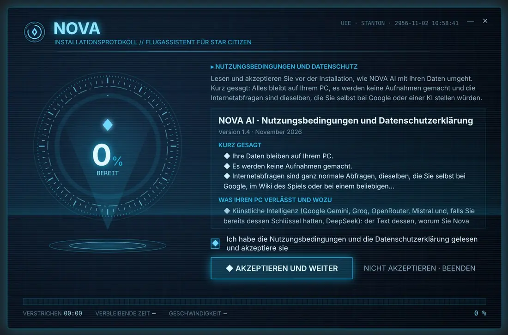
NORMAS_Y_PRIVACIDAD.de.md.Das Installationsprogramm prüft Python, Ihre Grafikkarte, den freien Speicher und die Verbindung. Unter ▸ INSTALLATIONSORDNER sehen Sie, wohin installiert wird, und den freien Platz auf diesem Laufwerk: Mit ORDNER WÄHLEN… wechseln Sie zu einem anderen Ordner oder Laufwerk (zum Beispiel D:\Spiele\NOVA AI). Wählen Sie auch die Optionen: NVIDIA-Beschleunigung, Offline-Stimme (Piper), Desktop-Verknüpfung und Nova am Ende starten. Drücken Sie dann ◆ INSTALLATION STARTEN.
Bei einem Update bleibt NOVA AI im bisherigen Ordner; um sie zu verschieben, deinstallieren Sie sie zuerst (Ihre Daten bleiben erhalten).
Sie sehen jeden Schritt mit seinem Status, den Prozentsatz, die Downloadgeschwindigkeit und die Restzeit. Schlägt etwas fehl, erscheinen die Schaltflächen Erneut versuchen und Protokoll anzeigen.
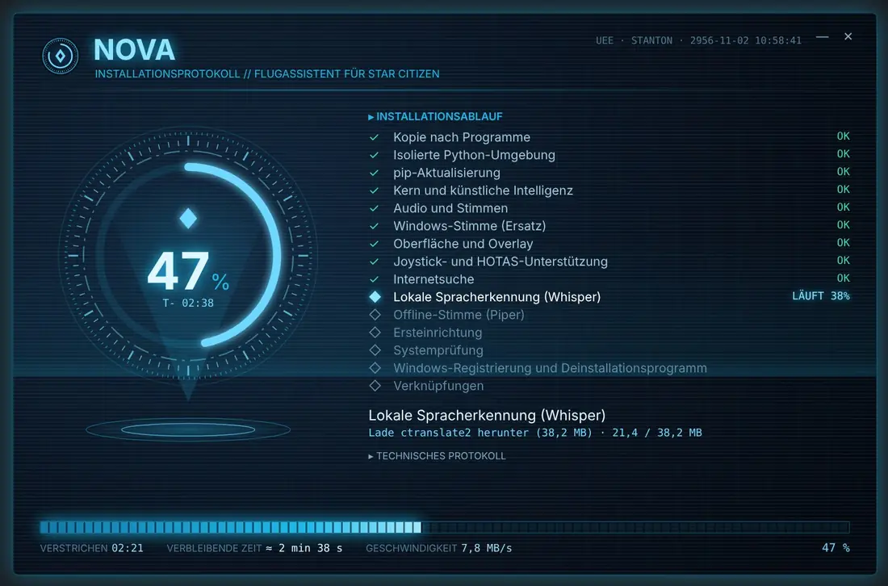
Am Ende haben Sie die Verknüpfung NOVA AI auf dem Desktop und im Startmenü. Beim ersten Öffnen beginnt die Ersteinrichtung (Abschnitt 03).

C:\Program Files\NOVA AI oder der Ordner, den Sie gewählt haben.%LOCALAPPDATA%\NOVA AI\datosBeim Start und beim Beenden prüft NOVA auf GitHub (github.com/0zzyt0/NOVA-AI), ob es eine neue Version gibt. Wenn ja, sagt sie es Ihnen auf dem Bildschirm und laut:
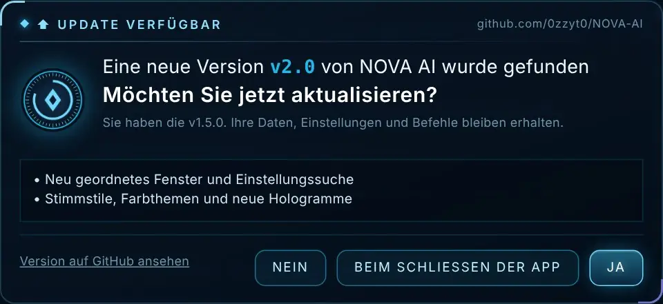
Sie können auch per Stimme antworten: „ja“, „nein“ oder „beim Schließen“. Wenn Sie nicht antworten und NOVA schließen, fragt sie beim Beenden in einem Fenster nach. Ihre Daten, Einstellungen und Befehle bleiben immer erhalten. Haben Sie die Bedingungen dieser Version schon akzeptiert, fragt das Installationsprogramm nicht erneut danach.
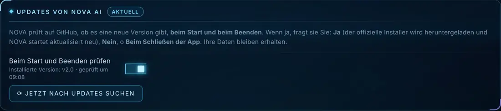
Beim ersten Mal öffnet Nova einen Assistenten mit 7 Schritten. Sie können per Sprache (Mikrofon-Schaltfläche) oder per Tastatur antworten. Jede Antwort bekommt ein grünes ✓, wenn sie Sie verstanden hat; erscheint ein rotes ✕, wiederholen Sie es.
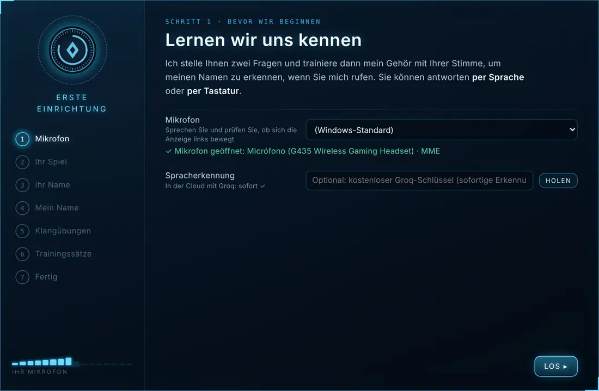
Wählen Sie Ihr Mikrofon und sprechen Sie: Die Anzeige links sollte sich bewegen. Haben Sie einen Groq-Schlüssel, fügen Sie ihn hier ein (Abschnitt 11); das ist optional.
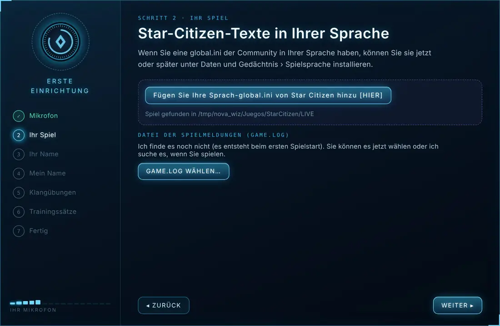
Nova sucht Ihren Star-Citizen-Ordner LIVE und seine Sprache. Ist das Spiel nicht in Ihrer Sprache, können Sie die Community-Übersetzung später unter Daten und Gedächtnis › Spielsprache installieren (Abschnitt 09).
Findet sie das Spiel nicht? Klicken Sie auf Spielordner wählen und zeigen Sie auf Ihren StarCitizen-Ordner.
Darunter sehen Sie die Datei der Spielmeldungen (Game.log): wo sie sie gefunden hat oder, wenn Sie aus einem anderen Ordner spielen, GAME.LOG WÄHLEN…. Existiert sie noch nicht (sie entsteht beim ersten Spielstart), sucht Nova sie selbst, wenn Sie spielen.
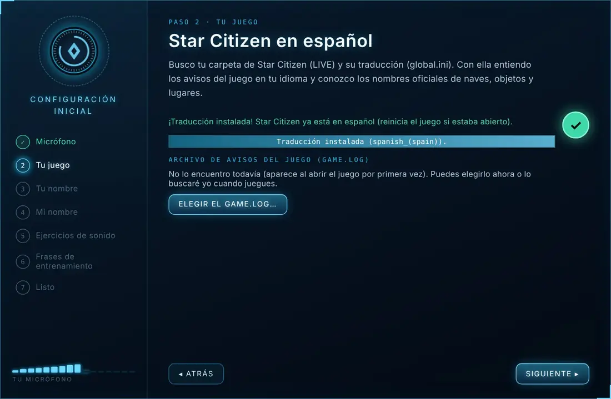
Auf Spanisch lädt sie mit Ja, herunterladen und installieren die Übersetzung von 0zzyt0 herunter, kopiert sie nach LIVE und stellt Ihre user.cfg auf Spanisch (die Stimmen im Spiel bleiben Englisch). Vorher legt sie eine Kopie an: user.cfg.nova_copia.
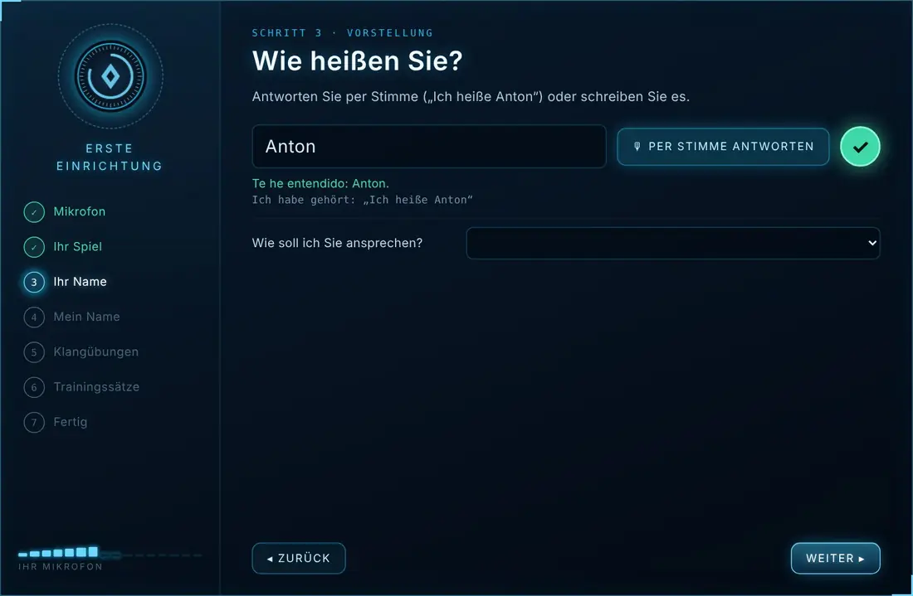
Sagen Sie „Ich heiße Anton“ oder tippen Sie es ein, und wählen Sie, wie sie Sie ansprechen soll: Herr, Kapitän, mit Ihrem Namen…
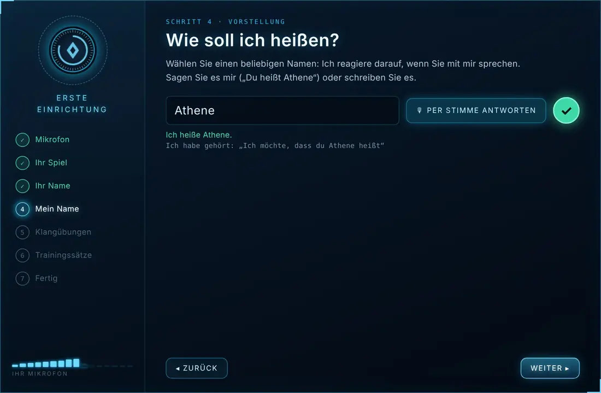
Jeder Name, den Sie möchten: Nova, Athene, Jarvis… Sie warnt Sie, wenn er zu kurz oder ein gängiges Wort ist, weil sie sonst aus Versehen aufwachen würde. Zwei oder drei Silben sind ideal.
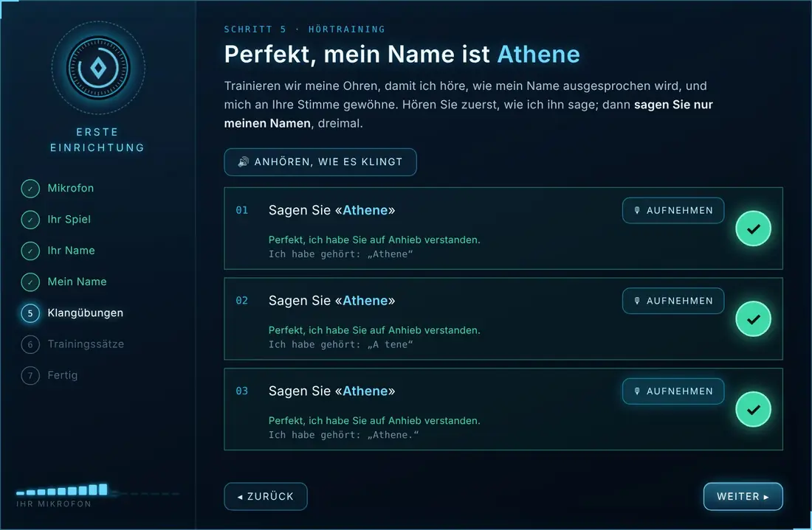
Klicken Sie auf Anhören, wie es klingt und sagen Sie dann nur ihren Namen dreimal. Schreibt die Spracherkennung ihn anders („A tene“ statt „Athene“), lernt Nova das.
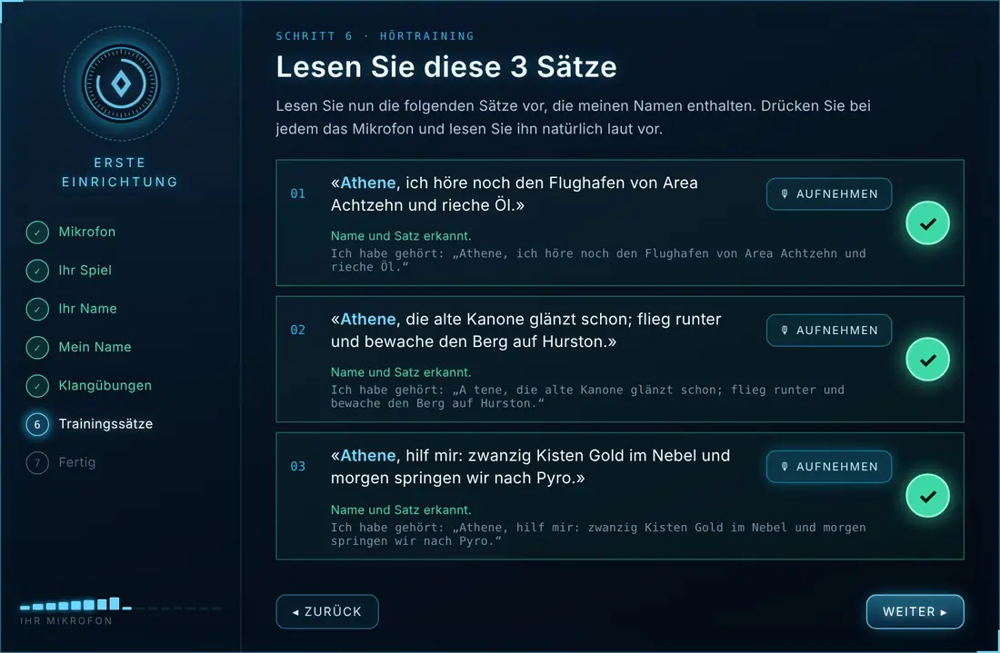
Lesen Sie 3 Star-Citizen-Sätze laut vor, die mit ihrem Namen beginnen. Sie werden zufällig gewählt: einer mit vielen Vokalen hintereinander (für Ihre Aussprache), einer mit schwierigen Konsonanten und einer, der beides mischt. So passt sie die Empfindlichkeit an Ihre Stimme und die Geräusche in Ihrem Zimmer an.
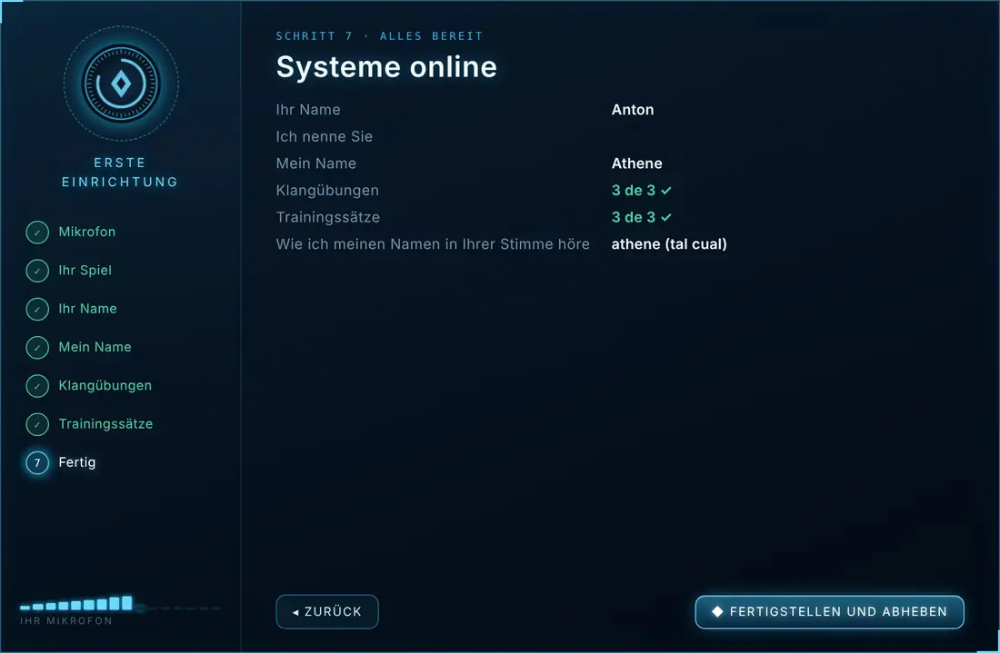
Eine Zusammenfassung von allem. Klicken Sie auf ◆ Fertigstellen und abheben.
Nova öffnet sich in einem eigenen Fenster. Wenn Sie es schließen, bleibt Nova im Infobereich von Windows, neben der Uhr (Abschnitt 10). Öffnen Sie es wieder, stellt es Gespräch, Bereich und Fenstergröße wieder her.
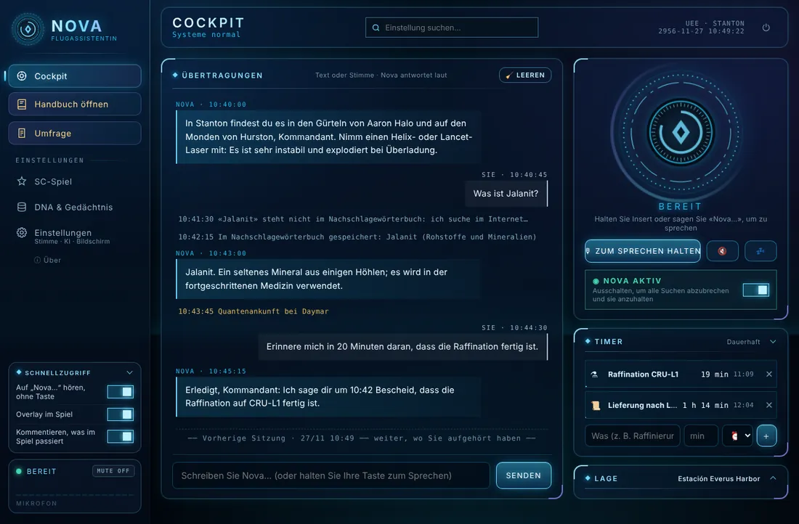
12 34 56 78 910 11Alles passt ohne Bildlaufleisten: Ist das Fenster niedrig, wird das Hologramm kleiner und Lage, Timer und Schnellzugriff klappen sich von selbst ein (eingeklappt zeigen sie eine Zusammenfassung wie „2 aktiv“). Klicken Sie auf ihre Kopfzeile, um sie zu öffnen oder einzuklappen; Nova merkt es sich.
| Bereich | Was Sie dort finden |
|---|---|
| 📖 Handbuch öffnen | Unter Cockpit: öffnet dieses Handbuch in Ihrem Browser (in Ihrer Sprache). |
| SC-Spiel | Sprachbefehle, Tasten und Joystick, Spielmeldungen (Game.log und Schiffsprofile), Spiel-Chat und Spielsprache. |
| Nova | Identität, Stimme (Stile, Aussprache und Audioausgabe), Zuhören (Mikrofon, so sprechen Sie mit ihr und Ruhemodus) und Intelligenz (mit Token sparen). |
| Bildschirm | Das Statuslogo und die Hologramme über dem Spiel sowie das Aussehen: Effektstufe und Farbthema. |
| Informationen | Quellen und Serverstatus, Wörterbuch, was sie über Sie weiß, Logbuch und Statistiken sowie Discord. |
| Einstellungen | Sprache von NOVA AI, Fenster und Infobereich, Updates, Über, Sicherungen, Dateien und Neuanfang. |
| 🔎 Einstellung suchen | In der Kopfzeile (oder Strg+F): Geben Sie einen Teil des Namens einer Option ein und sie bringt Sie direkt dorthin. |
Das Cockpit ist das Protokoll von allem, was Sie zu Nova sagen, und ihrer Antworten. Unter jeder Antwort sehen Sie, welche KI-Engine sie erzeugt hat (zum Beispiel via gemini-flash-lite-latest).
Halten Sie Einfg gedrückt, während Sie sprechen, und lassen Sie los. Sie können sie durch jede Taste, Maus- oder HOTAS-Taste ersetzen.
„Nova, fahr das Fahrwerk aus“. Sagen Sie nur „Nova“, antwortet sie „Ja, Herr?“ und wartet auf den Befehl.
Nutzen Sie das Textfeld im Cockpit und klicken Sie auf SENDEN. Ideal, wenn Sie in einem Discord-Sprachanruf sind.
| Art | Sätze |
|---|---|
| Manöver | „Fahrwerk ausfahren“ · „Landung anfragen“ · „VTOL-Modus“ · „Quantensprung“ |
| Systeme | „Schilde an“ · „Energie an“ · „Türen öffnen“ · „Licht“ |
| Spielinfos | „Wo baue ich Quantainium ab?“ · „Für wie viel verkauft sich Laranite?“ · „Baupläne für eine Pistole in Pyro“ |
| Ihre Sitzung | „Wo bin ich?“ · „Wo habe ich meinen Charakter gelassen?“ · „Wer ist an Bord gekommen?“ |
| Gedächtnis | „Merk dir, dass mein Lieblingsschiff die Cutlass ist“ · „Vergiss die Cutlass“ |
| Spieler und Planeten | „Such mir einen Spieler“ · „Erzähl mir von Daymar“ · „Was ist Security Post Kareah?“ |
| Timer | „Erinnere mich in 3 Stunden und 20 Minuten an die Raffinerie auf ARC-L1“ · „Welche Timer habe ich?“ |
| Handel und Server | „Welche Route bringt am meisten mit 100.000 aUEC?“ · „Wie stehen die Server?“ |
| Kampf und Statistik | „Ziel markieren“ (kommt ins Logbuch) · „Wie viele Abschüsse diesen Monat?“ |
| Nova steuern | „Nova, stopp alles“ oder „deaktiviere dich“ (hält sie an) · „Nova, aktiviere dich“ · „Ruhe“ oder „sei still“ (sie hört auf zu sprechen) |
| Über Nova | „Wer bist du?“ · „Stell dich vor“ · „Was kannst du?“ · „Öffne das Handbuch“ |
| Spiel-Chat | „Nova, sende eine Nachricht in den Chat: Braucht jemand Geleitschutz?“ (sie übersetzt sie bei Bedarf und tippt sie) |
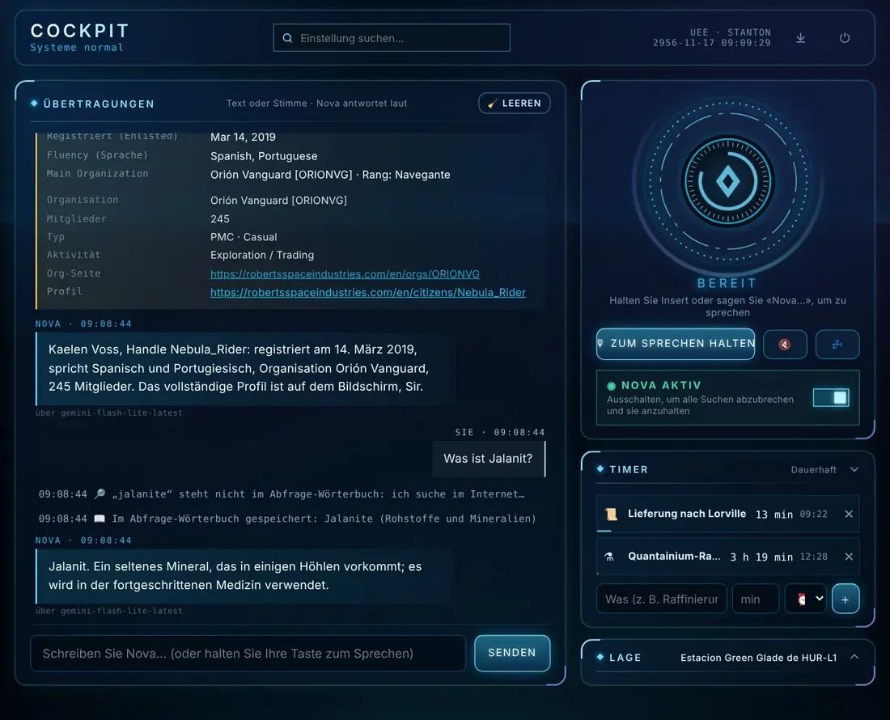
90, 1:30 oder 2h30) und klicken Sie auf ＋.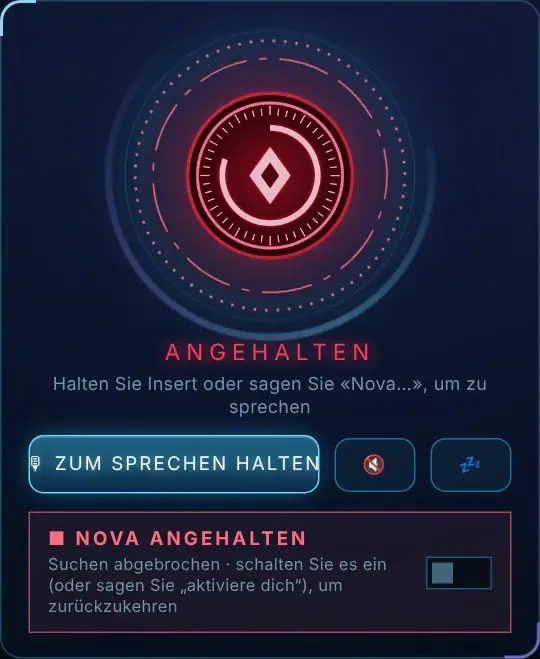
Wo Sie sind, Ihre aktiven Aufträge, das Overlay und die RSI-Server: Beim Start prüft NOVA status.robertsspaceindustries.com und warnt Sie vor Ausfällen oder Wartungen.
Nebula_Rider) und drücken Sie Enter. Sagen Sie alles auf einmal („such den Spieler Nebula_Rider“), entfällt Schritt 2.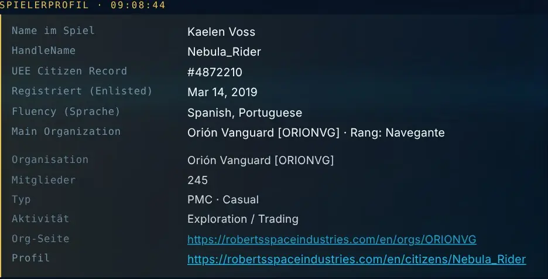
Nova liest den öffentlichen Steckbrief auf robertsspaceindustries.com: Name im Spiel, Handle, UEE-Akte, Registrierungsdatum, Sprachen und Hauptorganisation, dann die Seite dieser Organisation (Mitglieder, Typ, Aktivität). Seine Polizeiakte erscheint außerdem als Hologramm über dem Spiel (Abschnitt 08).
Ist eine Angabe verborgen (RSI zeigt sie als [REDACTED]), sagt Nova Ihnen, dass diese Information verborgen ist.
Jede Suche wird unter Informationen › Logbuch und Statistiken gespeichert, in der Datei Busquedas_de_jugadores.log: Datum · Uhrzeit · Spieler · Organisation.
Mit einem Webhook unter Informationen › Discord fragt Nova „Soll ich ihn an Discord senden?“ und postet ihn, wenn Sie innerhalb von 30 Sekunden „ja“ sagen oder tippen, in diesem Kanal (Kopfgeldziele in Rot). Das Cockpit zeigt Ihnen, ob er angekommen ist.
Wenn Sie eine Kopfgeldjäger- oder PvP-Mission annehmen (oder wenn „Neues Ziel: XX neutralisieren“ erscheint), fragt Nova „Soll ich seinen RSI-Steckbrief suchen?“ und sucht ihn nur, wenn Sie „ja“ sagen. Hat er einen Steckbrief, ist er ein Spieler: Ein Alarm ertönt und sein Steckbrief erscheint in Rot mit dem Stempel „KOPFGELDZIEL“. Wenn nicht, sagt sie Ihnen, dass es ein NPC-Pilot ist. Beides kommt ins Protokoll der Spielersuchen.
Alles rund um Star Citizen, in fünf Registerkarten: Sprachbefehle, Tasten und Joystick, Spielmeldungen, Spiel-Chat und Spielsprache.
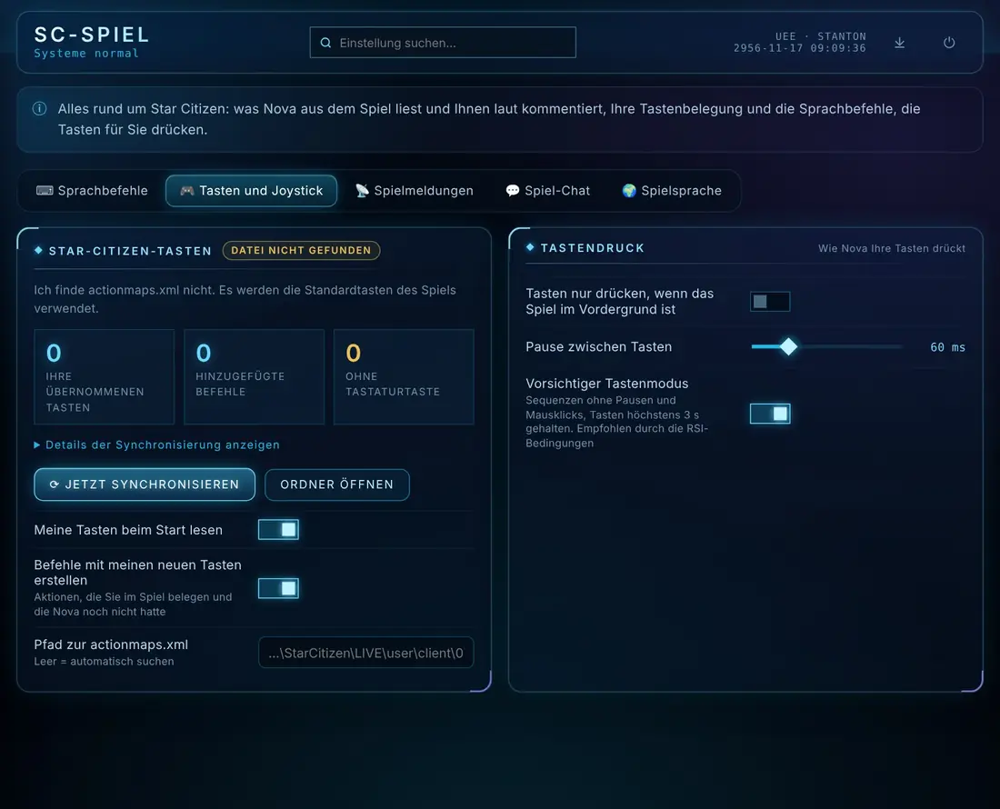
actionmaps.xml und nutzt Ihre eigenen Tasten.Die Liste der Befehle, nach Kategorie gruppiert (Start und Landung, Energie und Systeme, Waffen, Bergbau…). Jeder zeigt seine Sätze und Tasten. Sie können nach Name, Satz oder Taste suchen.
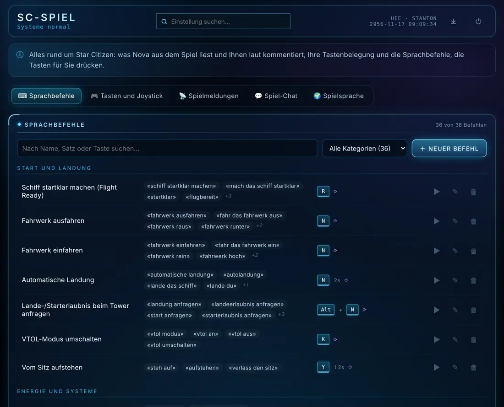
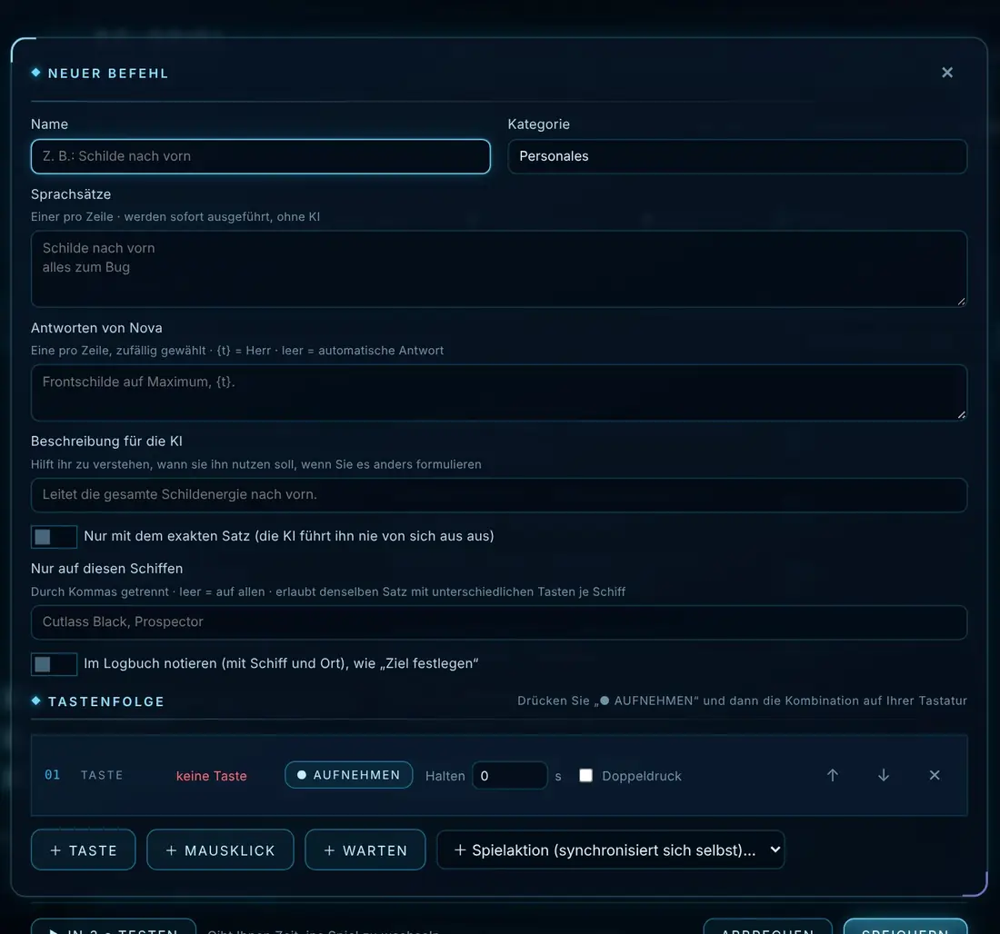
Nur auf diesen Schiffen beschränkt einen Befehl auf bestimmte Schiffe (und erlaubt denselben Satz mit unterschiedlichen Tasten auf jedem). Im Logbuch vermerken hält ihn mit Schiff und Ort fest, wie „Ziel markieren“.
comandos_personales.json): Updates löschen sie nicht. ↺ stellt einen Werksbefehl wieder her.Jedes Schiff kann eigene Sprachmeldungen haben: zum Beispiel keine Gruppen- oder Geldmeldungen in der MOLE. Nova weiß aus dem Game.log, in welchem Schiff Sie sitzen. Tippen oder wählen Sie das Schiff, klicken Sie auf ＋ PROFIL ERSTELLEN und haken Sie an, was Sie darin hören möchten; Abweichungen von den allgemeinen Meldungen werden gelb angezeigt. Das Profil des Schiffs, in dem Sie sind, ist als IN BENUTZUNG markiert.
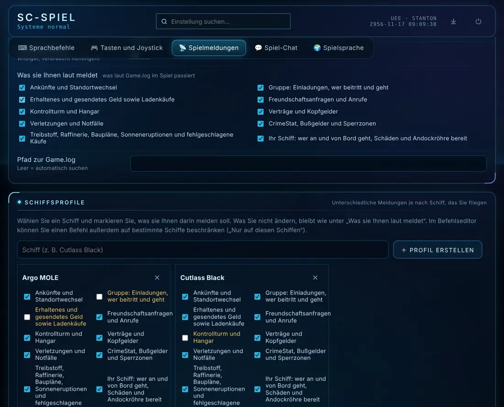
Das Game.log hält nicht fest, wenn Sie ein Ziel markieren („taggen“ eines Gegners). Bitten Sie sie per Stimme darum („Nova, Ziel markieren“, „markiere das Ziel“), drückt Nova die Taste und vermerkt es im Logbuch (Kennzeichnung ZIEL) mit Schiff und Ort.
„Nova, welche Route bringt am meisten mit 100.000 aUEC?“: Mit den UEX-Preisen berechnet sie, wie viele SCU Sie für den Frachtraum Ihres aktuellen Schiffs (oder des genannten) kaufen sollten, den Bestand am Start, die Nachfrage am Ziel und Ihr Geld, und sortiert nach echtem Gewinn. Kennt sie Ihr Schiff nicht, nutzt sie den Standard-Frachtraum aus Informationen › Quellen.
Schreiben Sie in den Star-Citizen-Chat, ohne die Steuerung loszulassen, und auf Englisch, auch wenn Sie mit ihr in einer anderen Sprache sprechen:
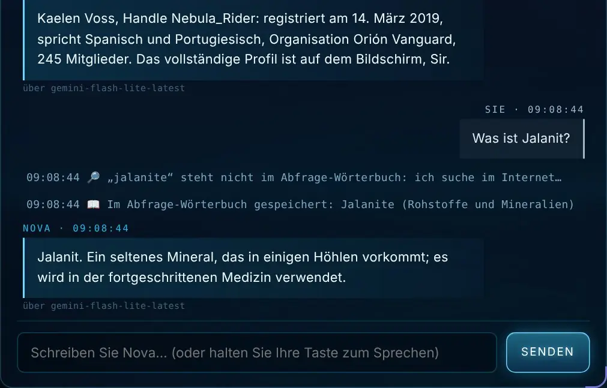
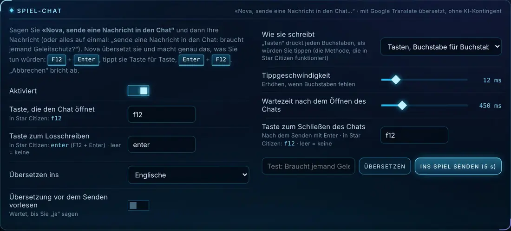
Tippen Sie eine Nachricht und klicken Sie auf ÜBERSETZEN, um die Übersetzung zu sehen, oder auf INS SPIEL SENDEN (5 s) und kehren Sie zu Star Citizen zurück: Nach 5 Sekunden wird sie getippt. „Abbrechen“ verwirft eine wartende Nachricht. Jede Nachricht kommt ins Logbuch (Kennzeichnung CHAT).
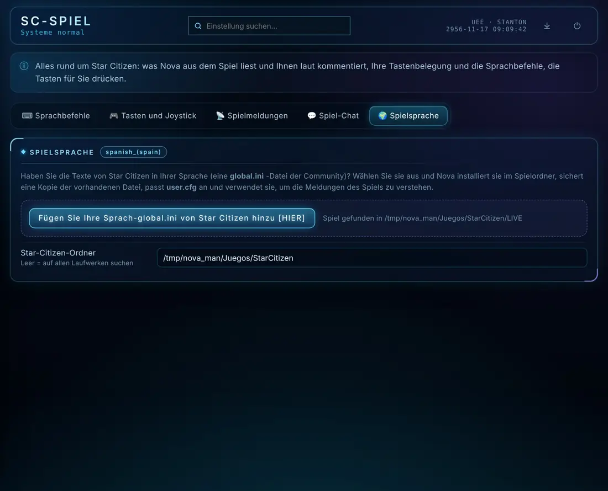
global.ini. Sie überschreibt die Dateien in LIVE nach einer Sicherung.Unter Nova finden Sie alles über sie, in vier Registerkarten: Identität, Stimme, Zuhören und Intelligenz. Wir beginnen mit ihrem Klang. Alle Stimmen sind kostenlos: Die von Edge sind die natürlichsten, die von Piper funktionieren ohne Internet.
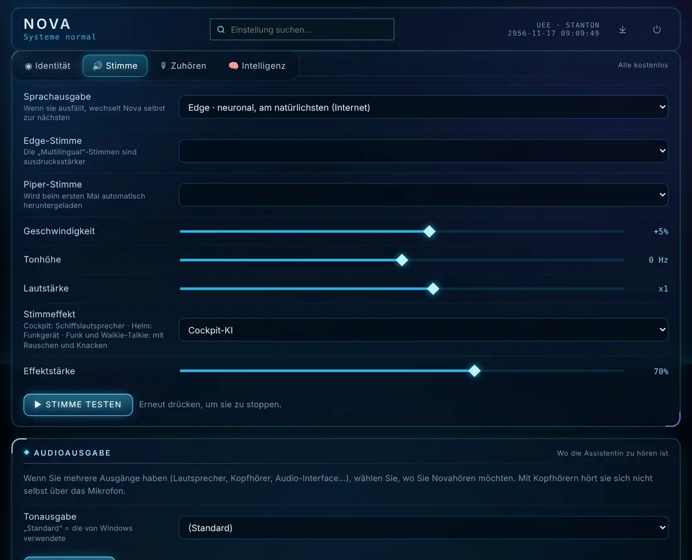
| Engine | Wie sie klingt | Internet |
|---|---|---|
| Edge | Neuronale Stimmen von Microsoft, sehr natürlich. Die Liste zeigt die für Ihre Sprache und am Ende die Multilingual-Stimmen anderer Sprachen, die auch Ihre sprechen (mit ihrem Akzent). | Ja |
| Piper | Gute Qualität und offline. Die Stimme lädt sich beim ersten Mal von selbst herunter. | Nein |
| Windows | Die Systemstimme, als letzte Möglichkeit. | Nein |
Oben unter Nova › Stimme gibt es sieben Stile: fertig abgestimmte Kombinationen aus Stimme, Tempo, Tonhöhe und Cockpit-Effekt, im Stil der Bord-Assistenten aus Filmen. Klicken Sie einen an und Nova probiert ihn sofort aus; ändern Sie danach etwas von Hand, wird der Stil abgewählt und bleibt nach Ihrem Geschmack.
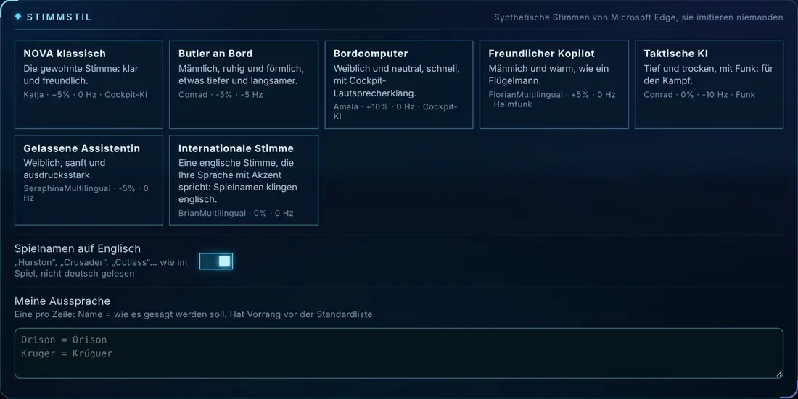
| Stil | Wie er klingt |
|---|---|
| NOVA klassisch | Die gewohnte Stimme: klar und freundlich, mit Cockpit-Effekt. |
| Butler an Bord | Männlich, ruhig und förmlich, etwas tiefer und langsamer. |
| Bordcomputer | Weiblich und neutral, schnell, mit Cockpit-Lautsprecherklang. |
| Freundlicher Kopilot | Männlich und warm, über den Helmfunk. |
| Taktische KI | Tief und trocken, über Funk mit Knacken: für den Kampf. |
| Gelassene Assistentin | Weiblich, sanft und ausdrucksstark. |
| Internationale Stimme | Eine englische Stimme, die Ihre Sprache mit Akzent spricht: Spielnamen klingen englisch. |
Edge liest Crusader, Hurston oder Cutlass nach den Regeln Ihrer Sprache. Mit Spielnamen auf Englisch (standardmäßig an) spricht Nova sie wie im Spiel aus: Planeten, Monde, Stationen, Hersteller und Schiffe. Unter Meine Aussprache ergänzen oder korrigieren Sie eigene, eine pro Zeile: Orison = Orissen. Ihre Einträge haben Vorrang vor der Standardliste, und ▶ Stimme testen sagt einen Satz mit Spielnamen, damit Sie es hören.
Am Ende der Registerkarte Stimme: Haben Sie mehrere Ausgänge (Lautsprecher, Kopfhörer, USB-Audiointerface…), wählen Sie, wo Sie Nova hören möchten. Standard nutzt den von Windows. ▶ Ton testen zum Prüfen. Mit Kopfhörern hört Nova sich nicht selbst über das Mikrofon.
Wie Sie mit Nova kommunizieren: Die Registerkarte Zuhören vereint das Mikrofon, wie Sie mit ihr sprechen, und den Ruhemodus (Kapitel 10).
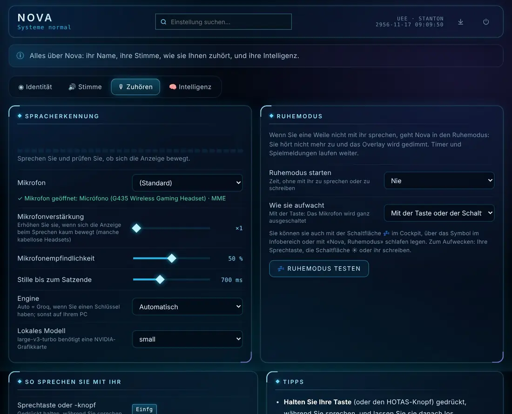
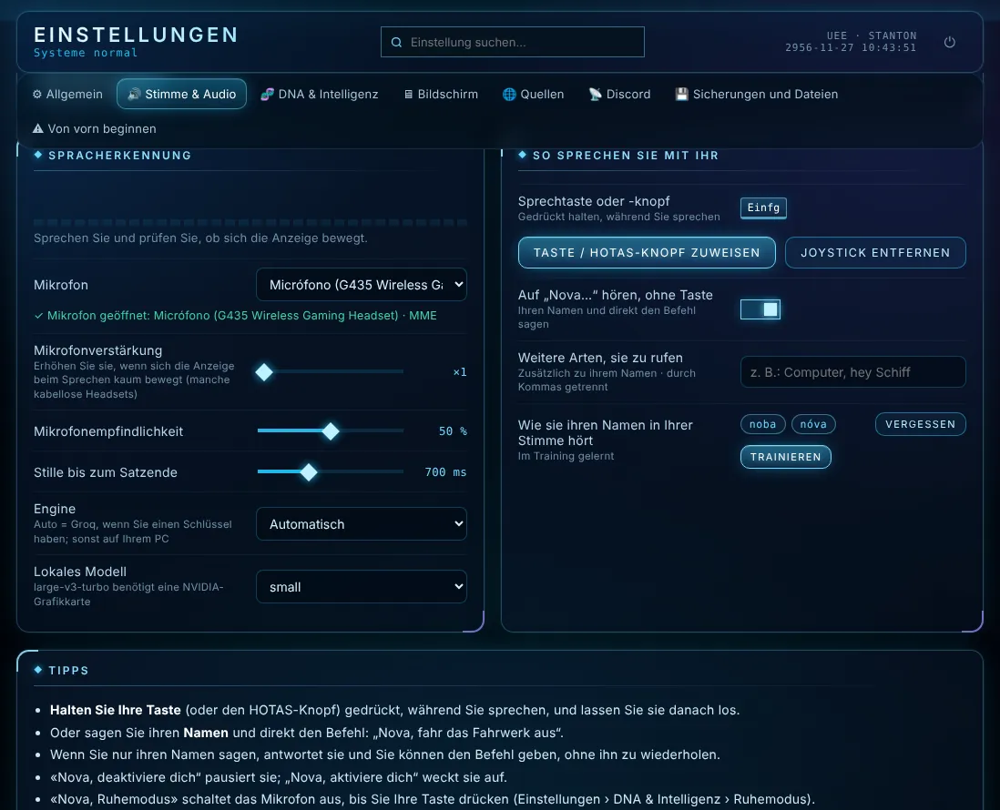
small ohne NVIDIA; large-v3-turbo mit NVIDIA.Novas Gehirn: ihr Name und Ihrer (Registerkarte Identität) und unter Intelligenz die Schlüssel der KI-Engines, die Reihenfolge, in der sie sie nutzt, ihre Persönlichkeit und Token sparen.
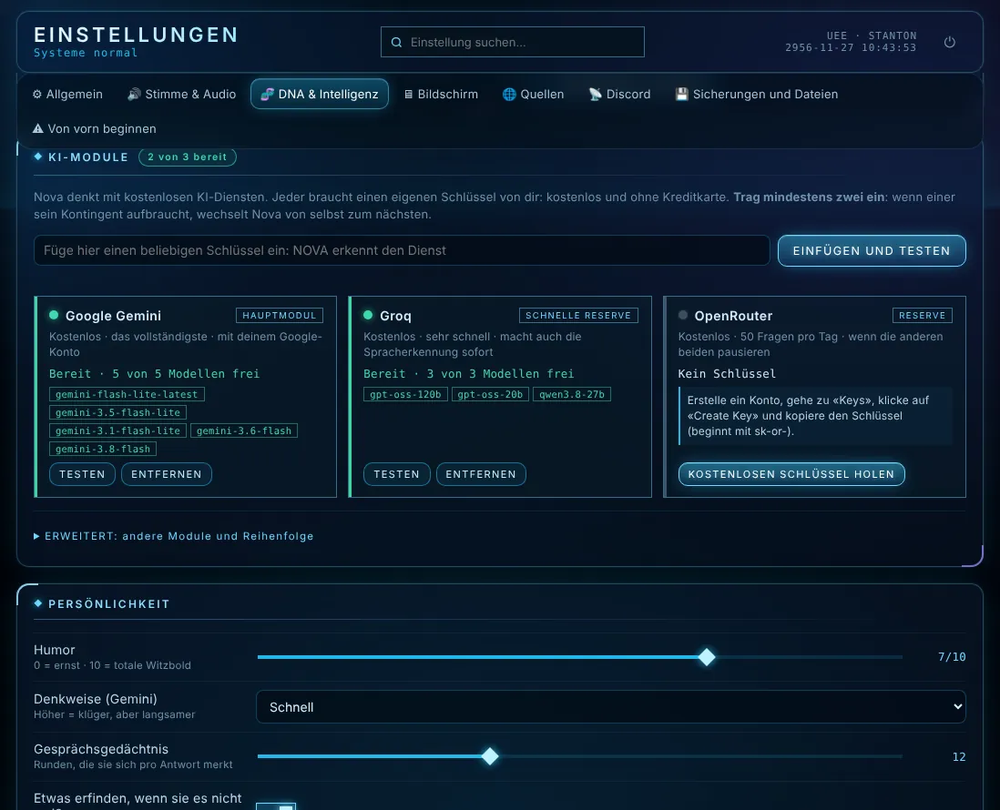
Name der KI, Ihr Name und wie sie Sie anspricht. Ändern Sie ihren Namen, wiederholen Sie das Training mit ◆ Einrichtung wiederholen, damit sie ihn in Ihrer Stimme erkennt.
Seit 2.1.5 bringt NOVA keine eingebauten Schlüssel mehr mit: Jeder Pilot trägt seine eigenen ein (kostenlos, Kapitel 11). Füge einen beliebigen Schlüssel oben in das Feld ein: NOVA erkennt den Dienst, speichert ihn und testet ihn. Jeder Dienst hat seine Karte mit Ampel: grün bereit, gelb pausiert (mit der Uhrzeit, wann er wieder da ist) und rot ungültiger Schlüssel.
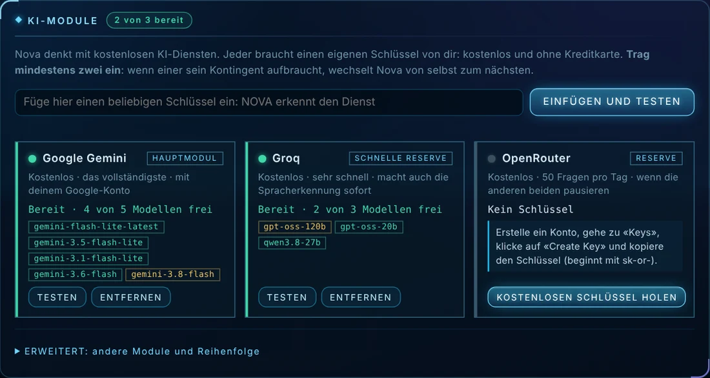
Mit dem Schlüssel eines Dienstes nutzt Nova alle seine kostenlosen Modelle nacheinander und wechselt dann zum nächsten Dienst: Gemini (5 Modelle) › Groq (3) › OpenRouter. Bei Gemini und Groq hat jedes Modell sein eigenes Kontingent; ist eines voll, ist das nächste meist frei. Jeder Fehler wird nach seiner Ursache behandelt:
| Was passiert | Was Nova tut |
|---|---|
| Minutenlimit | Bittet der Dienst, ein paar Sekunden zu warten, wartet sie und versucht es erneut; dauert es länger, pausiert das Modell genau so lange und sie nimmt das nächste. |
| Tageskontingent aufgebraucht | Sie legt das Modell beiseite, bis sich das Kontingent erneuert (bei Gemini um Mitternacht kalifornischer Zeit: 9:00 Uhr in Deutschland). |
| Server überlastet oder ohne Antwort | Kurze Pause, dann das nächste; schlägt es weiter fehl, wird die Pause länger (bis 10 Min.). |
| Ungültiger Schlüssel | Die Karte wird rot, bis du einen anderen einfügst. |
Ist keines frei, sagt dir Nova, welches ausfällt und wann es zurück ist. Unter Erweitert kannst du Mistral (kostenpflichtig) eintragen, Ollama auf deinem PC als letzte Reserve nutzen, die Reihenfolge selbst festlegen oder alle Pausen mit Alle jetzt erneut testen aufheben.
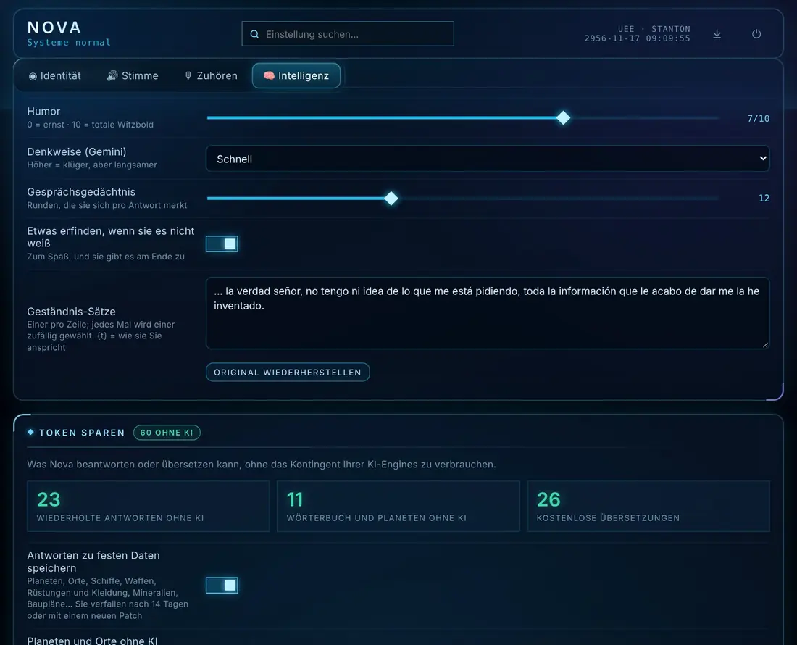
| Einstellung | Wofür sie ist |
|---|---|
| Humor | Von 0 (ernst) bis 10 (durch und durch witzig). |
| Nachdenken (Gemini) | Höher = klüger, aber langsamer. „Schnell“ ist ideal im Flug. |
| Gesprächsgedächtnis | Wie viele vorherige Runden sie sich bei jeder Antwort merkt. |
| Erfinden, wenn sie es nicht weiß | An: Sie erfindet die Antwort mit Witz und gibt es am Ende zu. Aus: Sie sagt Ihnen mit Humor, dass sie es nicht weiß. |
| Geständnissätze | Einer pro Zeile; sie wählt zufällig einen. {t} wird durch die Anrede ersetzt, die sie für Sie verwendet. Original wiederherstellen kehrt zum Werkssatz zurück. |
Am Ende von Nova › Intelligenz. Kostenlose Schlüssel haben ein Tageslimit. Nova beantwortet ohne KI alles, was sie kann:
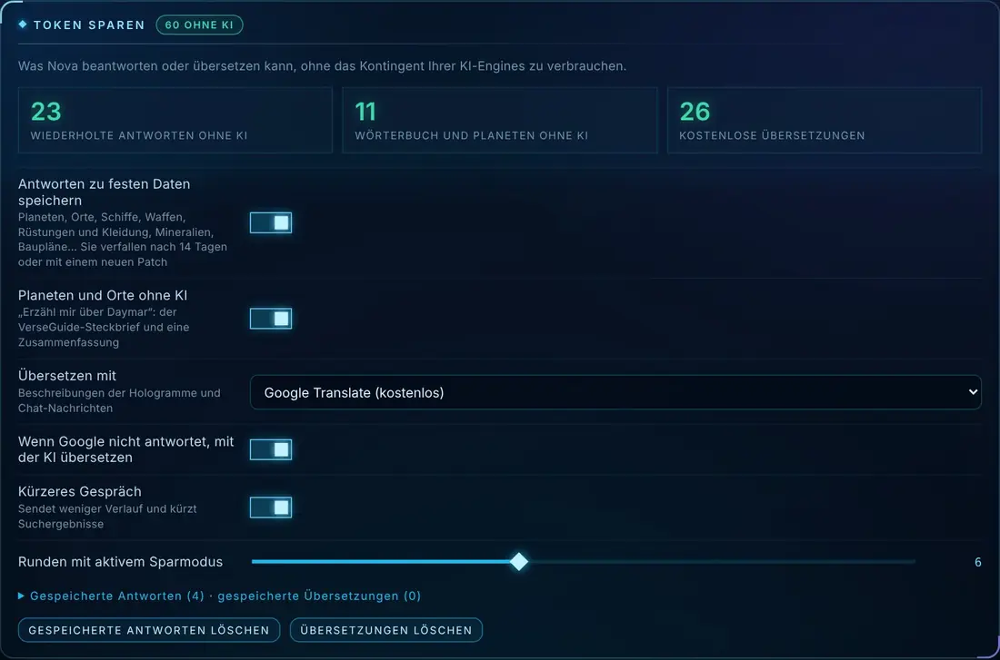
Antwortet die KI nur mit Daten, die sich nicht ändern (Schiffe, Waffen, Rüstungen und Kleidung, Komponenten, Mineralien, Baupläne, Planeten…), wird die Antwort gespeichert. Fragen Sie das nächste Mal dasselbe („Was ist die Cutlass Black?“ oder „Erzähl mir von der Cutlass Black“), wiederholt Nova sie, ohne etwas zu verbrauchen. Sie verfallen nach 14 Tagen oder wenn sich der Patch ändert. Preise, Routen, Ihre Sitzung und Fragen, die vom Gespräch abhängen, werden nie gespeichert.
„Erzähl mir von Daymar“, „Was ist Security Post Kareah?“: Nova holt den VerseGuide-Steckbrief, zeigt ihn als Hologramm und gibt Ihnen eine gesprochene Zusammenfassung.
Beschreibungen der Hologramme und Chat-Nachrichten werden mit dem Google Übersetzer übersetzt. Nur wenn Google nicht antwortet, wird die KI genutzt (abschaltbar). Übersetzungen werden gespeichert und nie erneut angefragt.
Schickt der KI weniger Verlauf (standardmäßig 6 Runden) und kürzt lange Antworten und Suchergebnisse. Zähler, eine Liste gespeicherter Antworten und Schaltflächen zum Löschen.
Alles, was NOVA über das Spiel zeichnet, und wie das Fenster aussieht, in drei Registerkarten: Overlay (das Statuslogo), Hologramme und Aussehen (Effektstufe und Farbthema). Die Vorschau nutzt eine Spielszene als Hintergrund, damit Sie sehen, wie es wirkt.
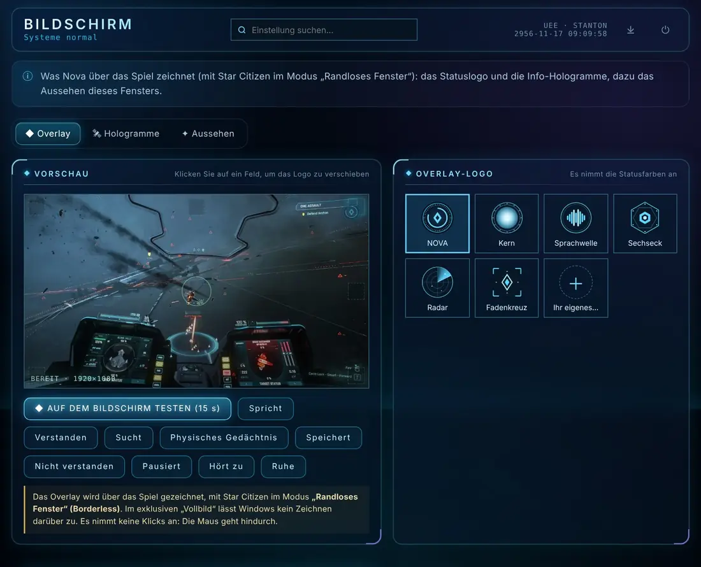
Hologramm-Steckbriefe über dem Spiel. Sie erscheinen wie eine Projektion (eine Lichtlinie, die sich mit einem Einschaltton öffnet), haben Scanlinien, solange sie zu sehen sind, und klappen mit einem Ausschaltton zusammen.
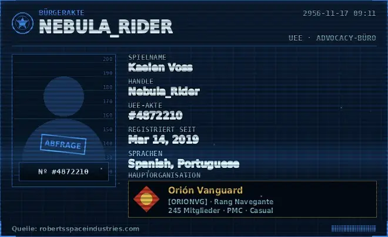
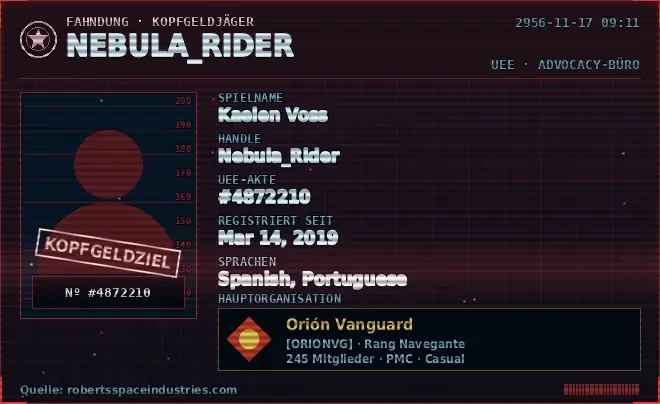
Wenn Sie einen Spieler suchen: Profilbild, Name im Spiel, Handle, Aktennummer, Registrierungsdatum, Sprachen und die Organisation mit ihrem Logo. Was der Spieler verbirgt, erscheint als REDACTED.
Ist das Ziel eines Kopfgelds oder einer PvP-Mission ein Spieler und sagen Sie „ja“ zur Suche, ertönt vor dem Öffnen des Steckbriefs ein zweitoniger Alarm, in Rot und mit dem Stempel KOPFGELDZIEL. Ist es ein NPC-Pilot, sagt sie es Ihnen nur.
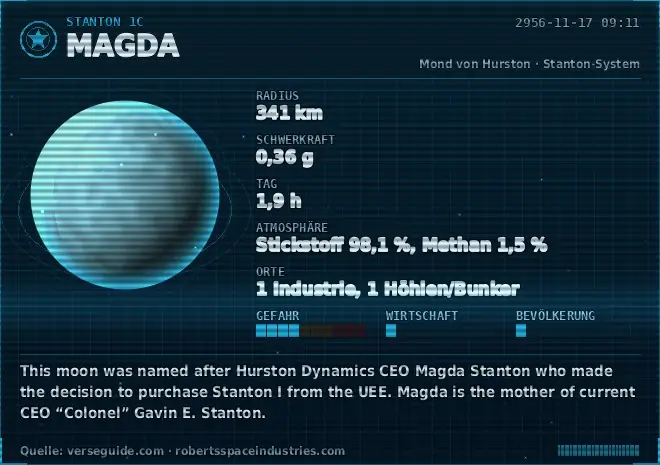
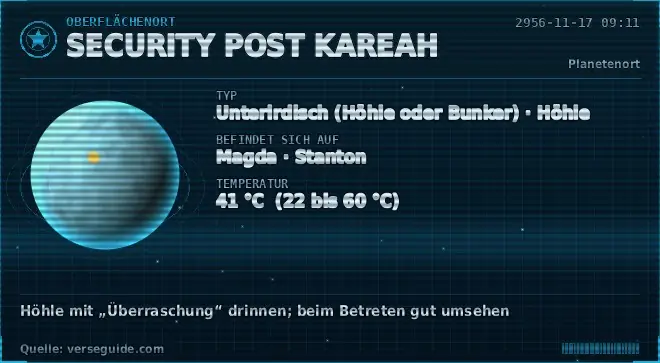
„Nova, erzähl mir von Daymar“. Daten von verseguide.com: Typ, Radius, Schwerkraft, Tageslänge, Atmosphäre, Gefahr, Wirtschaft, Bevölkerung, seine Orte und eine Beschreibung in Ihrer Sprache.
Höhlen, Außenposten, Basen, Bunker: „Was ist Security Post Kareah?“ → Typ, Lage, Temperatur und Beschreibung in Ihrer Sprache.
Bei der Ankunft: Zeigt das Game.log, dass Sie sich einem Planeten oder Mond nähern oder an einem seiner Orte ankommen, erscheint der Steckbrief von selbst (höchstens einmal pro halbe Stunde für denselben Ort).
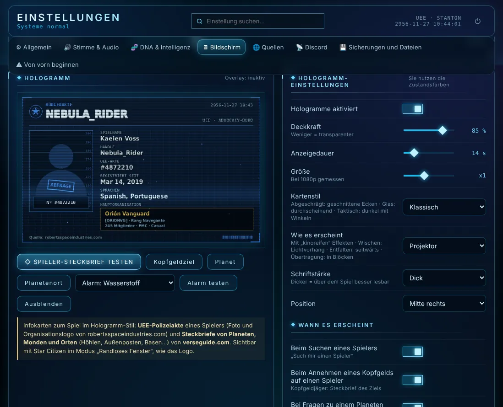
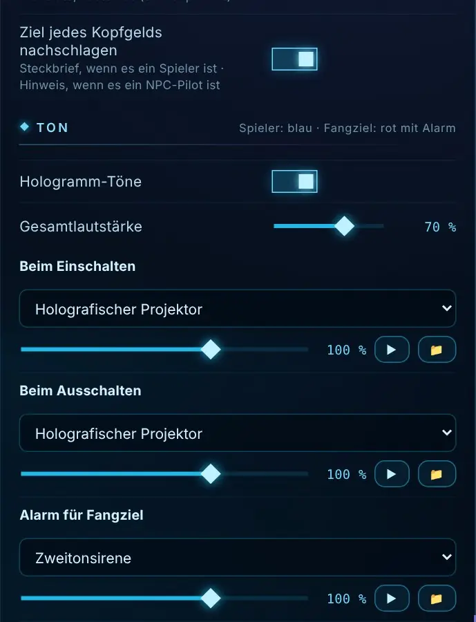
Jedes Hologramm gibt beim Einschalten und Ausschalten einen Ton von sich, und Kopfgeldziele haben vor dem Öffnen einen Alarm. Für jeden der drei Momente wählen Sie:
| Moment | Töne in der Liste |
|---|---|
| Beim Einschalten | Holoprojektor · Digitaler Impuls · Scanner · Glockenspiel · Triebwerksstart |
| Beim Ausschalten | Holoprojektor · Digitaler Impuls · Trennen · Glockenspiel · Triebwerk aus |
| Kopfgeldalarm | Zweitonsirene · Klaxon · Schnelle Pieptöne · Annäherungsalarm · Kampfglocke |
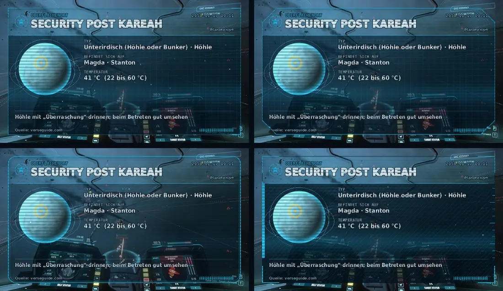
Klassisch (Raster und HUD-Ecken), Abgeschrägt (diagonal geschnittene Ecken), Glas (durchscheinend und abgerundet) oder Taktisch (dunkel, mit Winkeln und Seitenleiste).
Mit den kinoreifen Effekten: Projektor (öffnet sich von der Mitte), Wischen (ein Lichtvorhang von oben nach unten), Entfalten (seitwärts) oder Übertragung (materialisiert sich in Blöcken). Beim Verschwinden geschieht dasselbe rückwärts.
Normal, Dick (Standard) oder Sehr dick. Kleine Schrift wird nur so weit verstärkt, dass sie nicht verschwimmt.
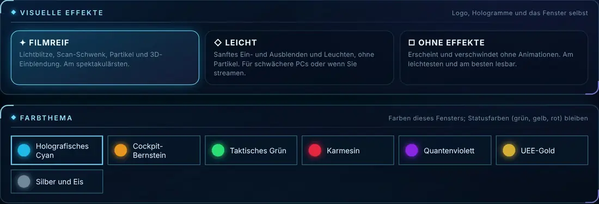
Funken, Scan-Schwenk, chromatische Aberration beim Projizieren, Lichtpartikel und ein Ring, der um das Logo kreist.
Sanfte Überblendungen und Glanz, ohne Partikel oder Flackern. Für schwächere PCs oder wenn Sie streamen.
Erscheint und verschwindet sofort, ohne Animationen. Am leichtesten und am besten lesbar.
Farbthema: Holografisches Cyan (das gewohnte), Cockpit-Bernstein, Taktisches Grün, Karmesin, Quantenviolett, UEE-Gold oder Silber und Eis. Es ändert die Farben dieses Fensters sofort; die Statusfarben (grün, gelb, rot, violett) bleiben, damit sie weiter dasselbe bedeuten.
Woher Nova ihre Informationen bezieht und was sie sich merkt, in fünf Registerkarten: Quellen, Wörterbuch, Was sie über Sie weiß, Logbuch und Statistiken und Discord. Beim Start prüft sie, ob es neue Daten für Ihren Patch gibt, bevor sie irgendetwas einschaltet.
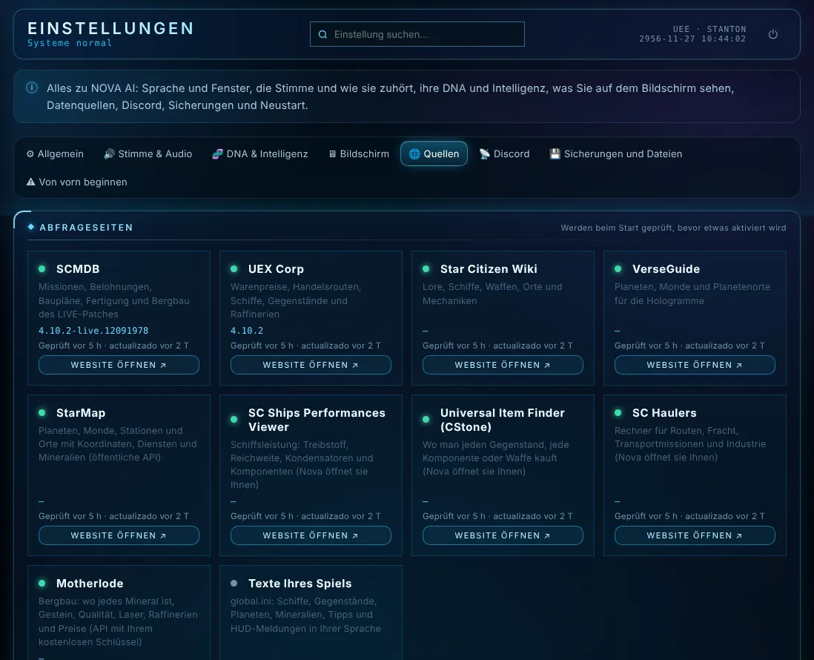
| Quelle | Was sie liefert |
|---|---|
| SCMDB | Missionen, Belohnungen, Baupläne, Herstellung und Bergbau für den LIVE-Patch. |
| UEX Corp | Warenpreise, Handelsrouten, Schiffe, Gegenstände und Raffinerien. |
| Star Citizen Wiki | Lore, Schiffe, Waffen, Orte und Mechaniken. |
| Die Texte Ihres Spiels | Die global.ini: offizielle Namen und HUD-Meldungen in Ihrer Sprache. |
| RSI | Öffentliche Steckbriefe von Spielern und Organisationen sowie Serverstatus. |
| VerseGuide | Planeten, Monde und Planetenorte für die Hologramme. |
| StarMap | Planeten, Stationen und Orte: Schwerkraft, Temperatur, Koordinaten, Dienste (Klinik, Landepads) und Mineralien. |
Seiten, die Nova in Ihrem Browser öffnet, wenn sie die beste Quelle sind (sagen Sie ihr: „Öffne den Gegenstandsfinder“): Universal Item Finder (finder.cstone.space, wo man jeden Gegenstand kauft), SC Ships Performances Viewer (spviewer.eu, Schiffsleistung) und SC Haulers (schaulers.com, Fracht- und Routenrechner).
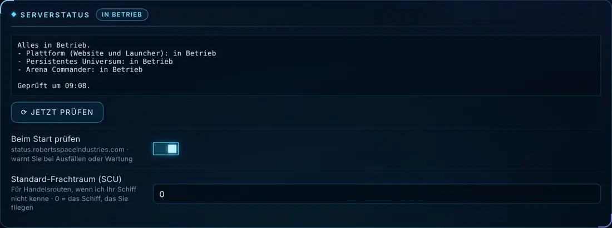
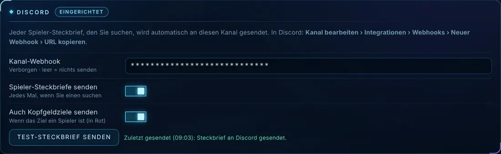
Beim Start prüft NOVA status.robertsspaceindustries.com und warnt Sie vor Ausfällen oder Wartungen. Jetzt prüfen schaut erneut nach. Fragen Sie sie „Wie stehen die Server?“.
Fügen Sie den Webhook eines Kanals ein (Discord: Kanal bearbeiten › Integrationen › Webhooks): Nach jedem Steckbrief fragt Nova, ob sie ihn senden soll; mit „ja“ wird er mit Foto und Logo gepostet, Kopfgeldziele ebenfalls (in Rot). Test-Steckbrief senden postet ein Beispiel, und darunter sehen Sie das Ergebnis des letzten Posts.
Die SCU, die Nova für Handelsrouten nutzt, wenn sie nicht weiß, in welchem Schiff Sie sitzen.
Unter Einstellungen › Allgemein schalten Sie die Prüfung auf neue Versionen beim Start und Beenden ein oder aus und können mit Jetzt nach Updates suchen manuell suchen. Wie das Update funktioniert: Abschnitt 02.
Was Nova über Sie speichert: Informationen › Was sie über Sie weiß und Logbuch und Statistiken. Ihre Dateien, die Sicherungen und der Neuanfang sind unter Einstellungen (Kapitel 10).
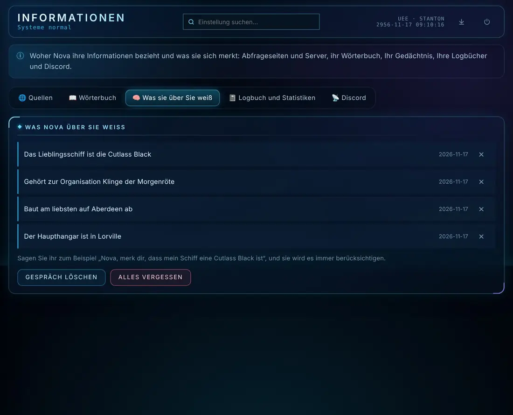
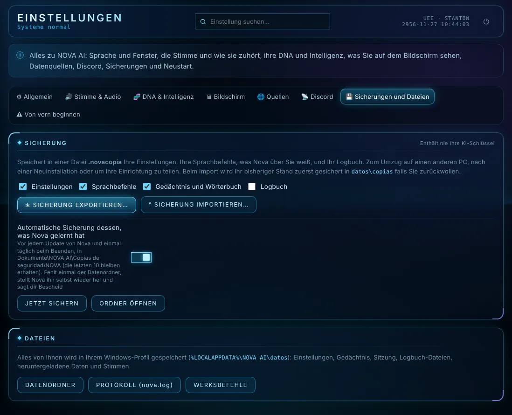
Unter Einstellungen › Sicherungen und Dateien. Alles von Ihnen liegt in %LOCALAPPDATA%\NOVA AI\datos. Drei Schaltflächen:
Jede Spielsitzung wird in eine .log-Datei geschrieben, die Sie mit dem Editor öffnen können (die letzten 60 bleiben erhalten). Sie entsteht aus dem Game.log selbst: Öffnen Sie Nova bei bereits laufender Sitzung oder nach dem Spielen, rekonstruiert sie das vollständige Logbuch.
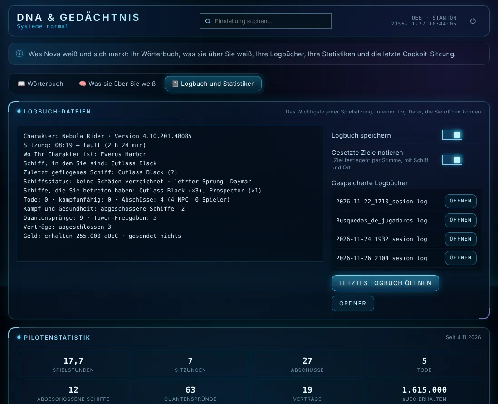
| Kennzeichnung | Was sie festhält |
|---|---|
| KAMPF | Abschüsse von NPCs und Spielern (Waffe und Ursache) und Schiffe, die Sie zerstören oder ausschalten. |
| TOD · TODE | Ihre Tode (wer, womit, Ursache), die anderer und der Wiedereinstiegspunkt. |
| GESUNDHEIT | Verletzungen, Kampfunfähigkeit mit Ursache und Heilung im Medizinbett. |
| LADEN · NETZ | Verbindung, Erscheinen, Ladezeit, hängende Ladevorgänge und Netzaussetzer. |
| SCHIFF · GRUPPE · TURM… | Ein- und Aussteigen, wer in Ihres steigt, Gruppe, Hangar, Aufträge, Geld, Käufe, Baupläne. |
Jeder Spieler, den Sie suchen (oder den Nova für ein Kopfgeld sucht), wird in Busquedas_de_jugadores.log geschrieben, im selben Logbuch-Ordner. Es ist eine einzige Datei, die mit alten Sitzungen nicht gelöscht wird:
Läuft eine Sitzung, kommt die Suche auch in das Logbuch dieser Sitzung (Kennzeichnung SPIELER oder ZIEL).
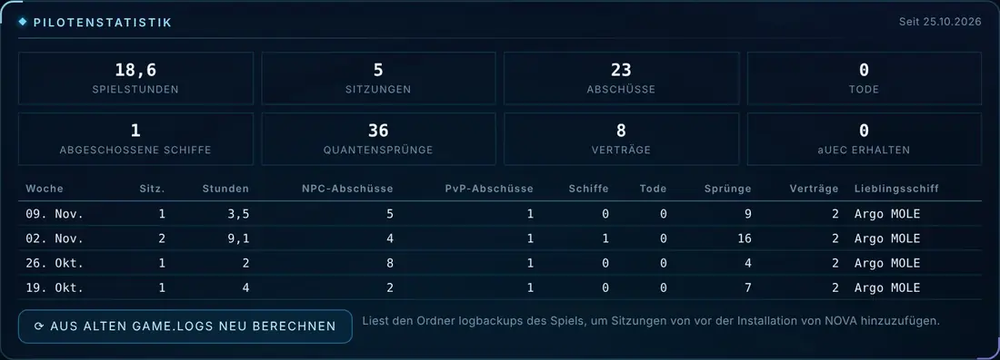
Stunden, Abschüsse, Tode, Sprünge, Aufträge und in Läden ausgegebenes Geld über alle Ihre Sitzungen, Woche für Woche. Neu berechnen liest die alten Game.log-Dateien des Spiels (logbackups), um hinzuzufügen, was Sie vor der Installation von Nova gespielt haben. Fragen Sie sie „Wie viele Abschüsse diesen Monat?“.
Novas physisches Gedächtnis: Diccionario_de_consultas.txt, in Ihrem Datenordner. Nach Gruppen sortiert (Planeten und Monde, Stationen, Städte, Orte, Schiffe und Fahrzeuge, Rüstungen, persönliche und Schiffswaffen, Komponenten, Ressourcen und Mineralien, Waren, Kleidung, Lackierungen, Hersteller…) und in jeder alphabetisch. Varianten stehen zusammen unter ihrer Familie, weil sie nicht gleich sind: Die Attrition-1 hat Größe 1 und die Attrition-5 Größe 5.
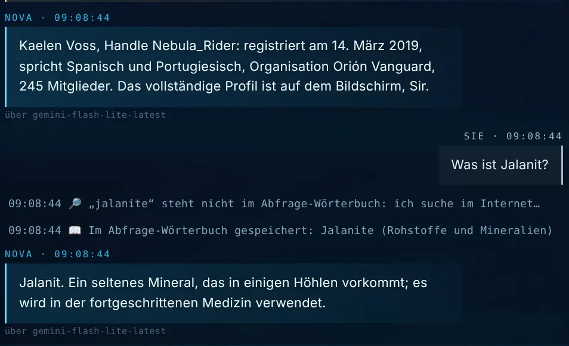
Gibt es es noch nicht (Erstinstallation), legt Nova es an, sagt es Ihnen und füllt es mit den offiziellen Spieltexten in Ihrer Sprache (der global.ini des Spiels): etwa 7.000 Einträge, ohne etwas zu verbrauchen. Jeder Eintrag trägt den Patch, das Datum und seine Herkunft (Spiel, Internet oder KI).
Es bleibt über Versionen hinweg erhalten, beim Aktualisieren und wenn Sie „von vorn beginnen“, und das Deinstallationsprogramm löscht es nicht. Mit einem neuen Patch oder einer neuen Übersetzung aktualisiert sich, was aus dem Spiel stammt, von selbst. „Nova, aktualisiere den Eintrag zu X“ sucht ihn erneut.
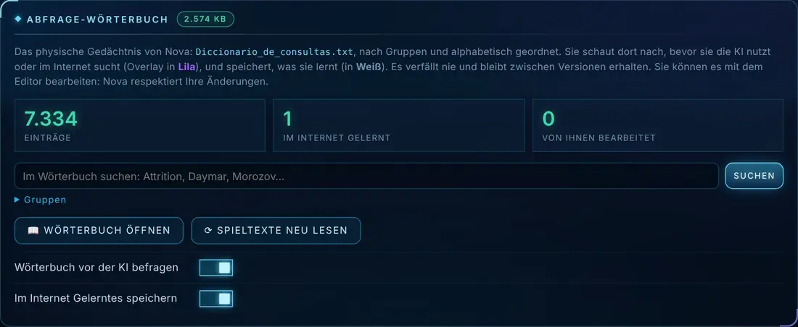
* Name: Definition bei). Nova nutzt Ihren Text und überschreibt ihn nie wieder. Suchen zeigt Ihnen, was sie über etwas weiß, ohne sie zu fragen.Unter Einstellungen finden Sie die Sprache (nur hier zu ändern), Fenster und Infobereich, die Updates, den Rundgang, Über, die Sicherungen und den Neuanfang. NOVA AI spricht fünf Sprachen: Spanisch, Englisch, Katalanisch, Französisch und Deutsch.
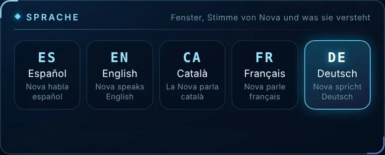
Klicken Sie auf die Karte Ihrer Sprache. Das Fenster lädt neu, und alles ändert sich: die Texte, Novas Stimme, was sie versteht, ihre Sprachbefehle, die Hologramme und dieses Handbuch. Sie können sie auch im ersten Bildschirm des Installationsprogramms wählen, das Ihnen die von Windows vorschlägt.
Nova spricht Sie immer höflich an: señor, sir, senyor, monsieur, Herr… (zu ändern unter Nova › Identität › Wie sie Sie anspricht).
| Sprache | „Wo kann ich ein P4-AR kaufen?“ | „Fahrwerk ausfahren“ |
|---|---|---|
| English | "Where can I buy a P4-AR?" | "Lower the landing gear" |
| Català | «On puc comprar un P4-AR?» | «Baixa el tren» |
| Français | «Où puis-je acheter un P4-AR ?» | «Sors le train» |
| Deutsch | «Wo kann ich ein P4-AR kaufen?» | «Fahrwerk ausfahren» |
LIVE\data\Localization\<Sprache>\global.ini.global.ini.antes_de_nova), setzt g_language in der user.cfg und nutzt die Datei, um die Meldungen des Spiels in Ihrer Sprache zu verstehen.spanish_(latin_america).Prüft von Ihrem PC aus, ohne den Browser zu öffnen, ob jede Seite antwortet, die Nova nutzt (UEX, Wiki, scmdb, VerseGuide, StarMap, spviewer, CStone, SC Haulers, RSI…). Grün: antwortet · Gelb: langsam · Rot: keine Antwort.
In der Kopfzeile des Fensters finden Sie 🔎 Einstellung suchen… (oder drücken Sie Strg+F). Geben Sie einen Teil des Namens einer Option ein (Stärke, Mikrofon, Thema…): Sie sehen, wo sie ist, und mit Enter oder einem Klick springen Sie hin und sie wird hervorgehoben.
.novacopia-Datei: Einstellungen, Sprachbefehle, Gedächtnis und Wörterbuch sowie das Logbuch. Sie enthält nie Ihre KI-Schlüssel oder Ihren Discord-Webhook.datos\copias gesichert, und die eigenen Pfade dieses PCs (Spielordner, Mikrofon…) bleiben erhalten.nova.log) und die Werksbefehle. Einstellungen › Von vorn beginnen löscht, was Nova über Sie gelernt hat, und kehrt zur Ersteinrichtung zurück.Seit Version 1.4 schaltet sich Nova beim Schließen des Fensters nicht aus: Sie bleibt im Infobereich von Windows, neben der Uhr (manchmal im kleinen Pfeil ^). Sie hört weiter zu, das Overlay bleibt im Spiel und die Timer melden sich weiter. Beim ersten Mal zeigt Windows einen Hinweis, damit Sie wissen, wo sie ist.
Öffnet das Fenster (oder holt es nach vorn, wenn es schon offen war).
NOVA AI öffnen, Mikrofon stummschalten (MUTE), Ruhemodus und NOVA AI beenden, das sie vollständig schließt.
Schickt das Fenster sofort in den Infobereich. ⏻ schaltet Nova weiterhin aus.
Sprechen Sie eine Weile nicht mit ihr, ruht Nova: Sie hört nicht mehr zu, und das Overlay wird dunkler und atmet langsam. Timer und Spielmeldungen funktionieren weiter.
Nach der Ersteinrichtung (oder beim ersten Öffnen von 1.4) zeigt Nova Ihnen in einer Minute, wo jede Option ist: das Cockpit, die Sprechtaste, den Ruhemodus, MUTE und jeden Bereich.
Weiter mit WEITER oder den Pfeiltasten, beenden mit BEENDEN oder Esc. Zum Wiederholen: Einstellungen › Allgemein › Geführter Rundgang.
Die Schaltfläche Umfrage unter „Handbuch öffnen“ öffnet acht Fragen von 1 bis 10 (oder k. A., wenn Sie diesen Teil nicht nutzen) und ein Feld für Ihre Ideen.
Ein API-Schlüssel ist wie ein Passwort, mit dem Nova einen KI-Dienst in deinem Namen nutzen darf. Seit 2.1.5 bringt NOVA AI keine eingebauten Schlüssel mehr mit: Die alten waren für alle gleich, und das Gratis-Kontingent (das pro Konto gilt, nicht pro Person) wurde von allen gemeinsam aufgebraucht. Mit deinen eigenen hast du das ganze Kontingent für dich. Sie sind kostenlos, brauchen keine Kreditkarte und sind in ein paar Minuten erstellt.
| Dienst | Wofür | Kosten | Beginnt mit |
|---|---|---|---|
| Gemini | Novas Hauptgehirn. | Kostenlos, ohne Kreditkarte | AIza… oder AQ.… |
| Groq | Ultraschnelle Reserve und Spracherkennung in der Cloud. | Kostenlos, ohne Kreditkarte | gsk_… |
| OpenRouter | Viele kostenlose Modelle als Reserve. | Kostenlos (50 Anfragen/Tag) | sk-or-v1-… |
| Mistral | Europäische KI. Optional: nicht mehr in der Standardkette. | Kostenpflichtig (seit August 2026) | kein festes Präfix |
Du kannst sie auch im letzten Schritt der Ersteinrichtung einfügen.
Google gibt an, dass es im kostenlosen Tarif das Gesendete zur Verbesserung seiner Produkte nutzen kann.
gsk_…): Er wird nur einmal angezeigt.gpt-oss-120bMit Groq haben Sie außerdem die schnellste Spracherkennung (Engine „Automatisch“ unter Nova › Zuhören).
sk-or-v1-…), bevor Sie das Fenster schließen.Nutzen Sie die Modelle, die auf :free enden, oder openrouter/free, das ein verfügbares kostenloses auswählt.
Seit August 2026 ist Mistral kostenpflichtig oder im Abo, daher hat 2.0 es aus der Standard-Engine-Kette genommen. Es bleibt Ihre Option:
mistral-small-latest).Hatten Sie bereits einen DeepSeek-Schlüssel (kostenpflichtig), nutzt Nova ihn weiter.
| Wenn… | Versuchen Sie das |
|---|---|
| Sie hört mich nicht | Zeigt der Kern RUHEMODUS, drücken Sie Ihre Taste oder ☀. Prüfen Sie, dass die Schaltfläche MUTE der Anzeige auf OFF steht und Ihr Headset nicht stummgeschaltet ist. Wählen Sie Ihr Mikrofon unter Nova › Zuhören: Dort sagt sie Ihnen, wenn nur Stille ankommt. Erhöhen Sie Empfindlichkeit oder Verstärkung, wenn Sie leise sprechen. |
| Sie löst von selbst aus | Senken Sie die Empfindlichkeit oder schalten Sie „Ohne Taste hören“ aus. Ist es eine gelernte Form ihres Namens, entfernen Sie sie mit Vergessen. |
| Sie reagiert nicht auf ihren Namen | Wiederholen Sie das Training unter Nova › Identität. Wählen Sie einen Namen mit 2 oder 3 Silben, der kein gängiges Wort ist. |
| Die Tasten kommen im Spiel nicht an | Starten Sie Star Citizen als Administrator, starten Sie auch Nova als Administrator. Schalten Sie „Tasten nur drücken, wenn das Spiel im Vordergrund ist“ ein. |
| Eine Taste funktioniert nicht | ⟳ Jetzt synchronisieren und „Details anzeigen“ prüfen. Liegt die Aktion nur auf Ihrem HOTAS, geben Sie ihr auch eine Tastaturtaste. |
| „Alle meine Engines haben kein Kontingent mehr“ | Fügen Sie Ihre eigenen Schlüssel hinzu (Abschnitt 11) oder warten Sie bis zum nächsten Tag. |
| Nova hört sich selbst | Nutzen Sie Kopfhörer. Das Mikrofon wird bereits taub, während Nova spricht. |
| Das Overlay ist nicht zu sehen | Stellen Sie das Spiel auf „Randloses Fenster“. Probieren Sie „◆ Auf dem Bildschirm testen“ und prüfen Sie den gewählten Monitor. |
| Das Hologramm ist nicht zu sehen oder hat keinen Ton | Wie beim Overlay: „Randloses Fenster“. Prüfen Sie Hologramme aktiviert und klicken Sie auf Testen. Für den Ton: Hologramm-Töne, ihre Lautstärke und die Audioausgabe. |
| Die Hologrammbeschreibung erscheint auf Englisch | Schalten Sie Beschreibungen übersetzen ein und prüfen Sie, dass Sie eine KI-Engine mit Kontingent haben (Abschnitt 09). Beim nächsten Mal wird sie übersetzt. |
| Ein Spieler erscheint als NPC-Pilot | RSI hat keinen Steckbrief unter diesem Namen (oder die Prüfung schlug fehl). Suchen Sie ihn von Hand: „Such mir einen Spieler“. |
| Das Update installiert sich nicht | Akzeptieren Sie die Windows-Abfrage (UAC). Schlägt es fehl, laden Sie das Installationsprogramm von GitHub (Releases) herunter und führen Sie es aus: Es behält Ihre Daten. |
| Die Nachricht wird nicht in den Chat getippt | Unter SC-Spiel › Spiel-Chat: Tasten f12 / enter / f12 und „Tasten, Buchstabe für Buchstabe“. Fehlen Buchstaben, erhöhen Sie die Tippgeschwindigkeit oder die Wartezeit. |
| Der Steckbrief kommt nicht in Discord an | Sehen Sie sich die Cockpit-Meldung oder „Letzter Post“ unter Informationen › Discord an: Dort steht, was Discord geantwortet hat. Existiert der Webhook nicht, erstellen Sie einen neuen und fügen Sie ihn ein. Test-Steckbrief senden prüft es. |
| Eine Definition ist falsch oder veraltet | Sagen Sie „Nova, aktualisiere den Eintrag zu X“ oder korrigieren Sie ihn selbst im Abfrage-Wörterbuch (Einstellungen › Dateien). |
| Nova reagiert auf nichts | Vielleicht ist sie angehalten (Overlay rot): Schalten Sie den Schalter im Cockpit ein oder sagen Sie „Nova, aktiviere dich“. |
| Die Hologramme sind schlecht lesbar | Erhöhen Sie die Stärke unter Bildschirm › Hologramme › Schriftstärke (Sehr dick), probieren Sie den dunkleren Stil Taktisch oder erhöhen Sie die Deckkraft. |
| Die Übersetzung erscheint nicht | Starten Sie das Spiel neu. Prüfen Sie den Ordner unter SC-Spiel › Spielsprache und installieren Sie die Übersetzung erneut. |
| Das Fenster öffnet sich nicht | Nova nutzt Edge. Haben Sie es nicht, öffnen Sie die Adresse aus ui_puerto.txt (Datenordner) in Ihrem Browser. Ist das Fenster geschlossen, suchen Sie sie im Infobereich von Windows. |
| Sie schließt sich beim Start | NOVA AI.exe zeigt Ihnen den Fehler. Für mehr Details öffnen Sie DEPURAR.bat im Programmordner oder sehen Sie sich fallos.log in Ihrem Datenordner an. |
| Das Installationsprogramm öffnet sich nicht | Es zeigt Ihnen den Grund und das Protokoll (%TEMP%\NOVA_AI_Setup.log). Als letzte Möglichkeit INSTALAR_CONSOLA.bat aus Nova.zip. |
%LOCALAPPDATA%\NOVA AI\datos. Keine eigenen Server, keine Konten, keine Telemetrie.Der vollständige Text steht in NORMAS_Y_PRIVACIDAD.de.md, dem Sie bei der Installation zugestimmt haben.
Fair spielen: Nova drückt Tasten wie VoiceAttack; Sie sind dafür verantwortlich, die Bedingungen von Star Citizen einzuhalten. Die KI kann sich irren (und erfindet sie etwas, gibt sie es zu). Ihre KI-Schlüssel gehören Ihnen: Geben Sie sie nicht weiter.
| Entwicklung | Aaron B. Roldan · Gametag 0zzyt0 · mit der KI-Engine Claude Opus 5.5 (Anthropic) |
| Dank | Org Defcorp · Faibo, Galleg0, Sr.Scott, AlpacaInTrouble, Lother und viele mehr |
| Lizenz | MIT-Lizenz (freie Software): Nutzen, ändern und teilen Sie sie, unter Beibehaltung des Urheberrechtshinweises (LICENSE) |
| Spielsprache | 0zzyt0 und die Community |
| Spieldaten | Community-Seiten: siehe „Danke an die Community“ (Abschnitt 14) |
| Game.log-Formate | Community-Projekte all-slain und sc-assistant (MIT-Lizenz) |
| KI- und Sprach-Engines | Google Gemini, Groq, OpenRouter, Mistral, Microsoft Edge, Piper, Whisper |
NOVA AI wäre ohne diese Community-Projekte nicht möglich. Der ganze Verdienst für ihre Informationen gebührt den Menschen, die sie erstellen und pflegen, oft in ihrer Freizeit. Wenn sie Ihnen nützen, besuchen und unterstützen Sie sie.
| Seite | Ihr Verdienst und ihre Rechte |
|---|---|
| Star Citizen Wiki starcitizen.tools | Die Enzyklopädie der Community: Lore, Schiffe, Waffen und Orte. Texte ihrer Autoren unter der Lizenz CC BY-SA. |
| UEX Corp uexcorp.space | Warenpreise, Handelsrouten, Schiffe und Raffinerien, täglich von den Nutzern aktualisiert. |
| SCMDB scmdb.net | Missionen, Belohnungen, Baupläne und Bergbau für jeden Patch. Daten unter der Lizenz CC BY-NC-ND 4.0. |
| VerseGuide verseguide.com | Steckbriefe von Planeten, Monden und Planetenorten. |
| StarMap starmap.space | Planeten, Stationen und Tausende Orte mit Koordinaten und Diensten, und seine kostenlose öffentliche API. |
| SC Ships Performances Viewer spviewer.eu | Schiffsleistung: Treibstoff, Reichweite, Kondensatoren und Komponenten. |
| Universal Item Finder finder.cstone.space | Von Meepowski (CStone): wo man jeden Gegenstand im 'Verse kauft, mit Daten aus der Community. |
| SC Haulers schaulers.com | Routen-, Fracht- und Transportmissionsrechner für die Industrie. |
| Roberts Space Industries robertsspaceindustries.com | Öffentliche Steckbriefe von Bürgern und Organisationen sowie Serverstatus. |
| Spielsprache | 0zzyt0 und Mitwirkende; Spieltexte von Cloud Imperium Games. |
| Google Translate · DuckDuckGo | Übersetzungen und Websuchen. |
Jede Seite gehört ihren Autoren und hat eigene Nutzungsbedingungen. NOVA AI fragt sie nur online ab (oder über ihre öffentlichen APIs), wie Sie es mit Ihrem Browser tun würden: Es ändert ihre Daten nicht, verbreitet sie nicht weiter (was heruntergeladen wird, bleibt auf Ihrem Computer) und beansprucht keine Urheberschaft.